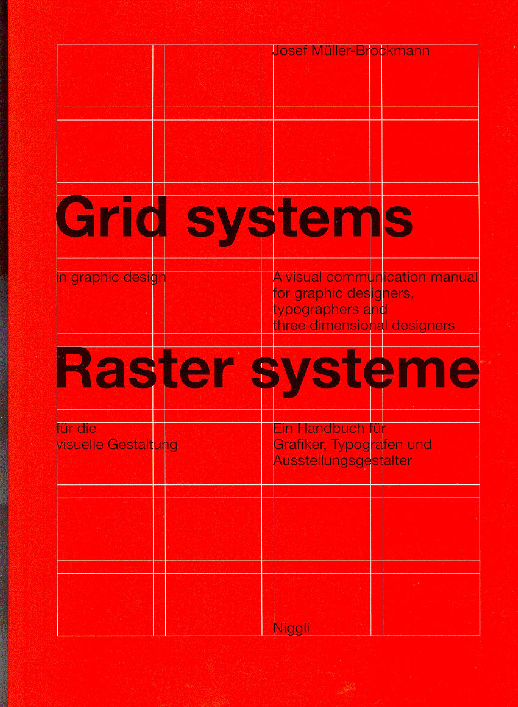
封面
《平面设计中的网格系统》——约瑟夫·米勒-布罗克曼著。平面设计中的网格系统 / 视觉传达设计中的网格系统：为平面设计师、排版师和三维设计师提供的手册。英文版 / 德文版。Niggli出版社。
原文参考 (OCR)
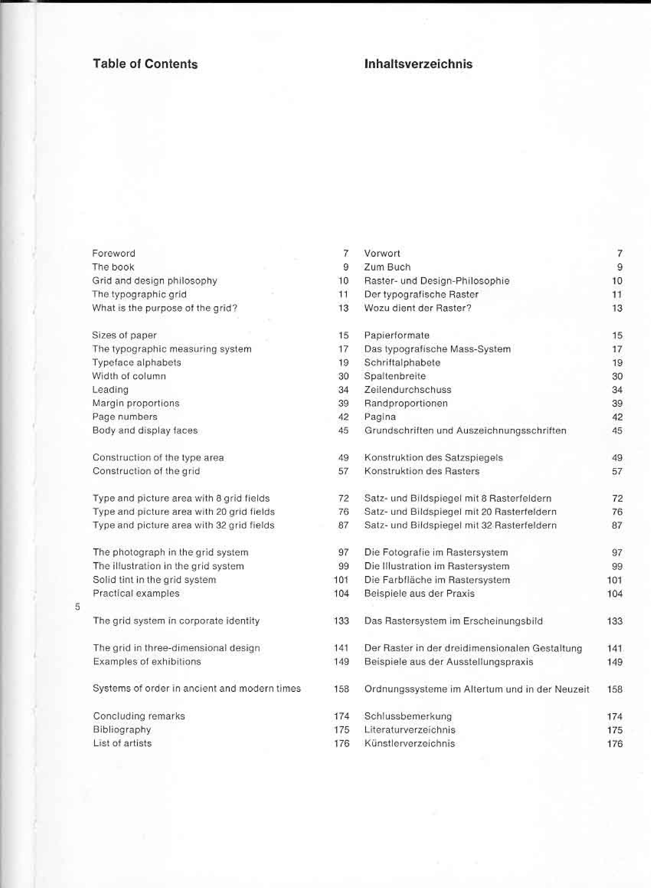
目录
本书系统性地介绍了网格系统的理论与实践。目录涵盖以下章节：前言、关于本书、网格与设计哲学、排版网格、网格的目的是什么、纸张尺寸、排版测量系统、字体字母表、栏宽、行距、页边距比例、页码、正文与展示字体、版心区域的构建、网格的构建、含8个网格字段的图文区域、含20个网格字段的图文区域、含32个网格字段的图文区域、网格系统中的摄影、网格系统中的插图、网格系统中的纯色、实践案例、企业形象中的网格系统、三维设计中的网格、展览实例，以及古今秩序系统。
原文参考 (OCR)
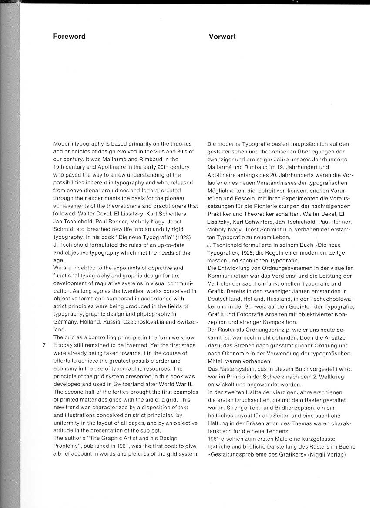
前言
现代排版学主要建立在20世纪二三十年代发展起来的理论和设计原则之上。19世纪的马拉美和兰波，以及20世纪初的阿波利奈尔，为理解排版学中蕴含的可能性铺平了道路——他们摆脱了传统偏见和束缚，通过实验为后来理论家和实践者的先驱性成就奠定了基础。
沃尔特·德克塞尔、埃尔·利西茨基、库尔特·施维特斯、扬·奇肖尔德、保罗·伦纳、莫霍利-纳吉、约斯特·施密特等人为僵化的排版学注入了新的生命。奇肖尔德在其1928年的著作《新排版学》（Die neue Typografie）中，阐述了符合时代需求的现代、客观排版学规则。
视觉传达中秩序系统的发展，归功于客观、功能性排版和平面设计的倡导者。早在二十年代，德国、荷兰、俄罗斯、捷克斯洛伐克和瑞士就在排版、平面设计和摄影领域创作出了具有客观化构思和严谨构图的作品。
原文参考 (OCR)
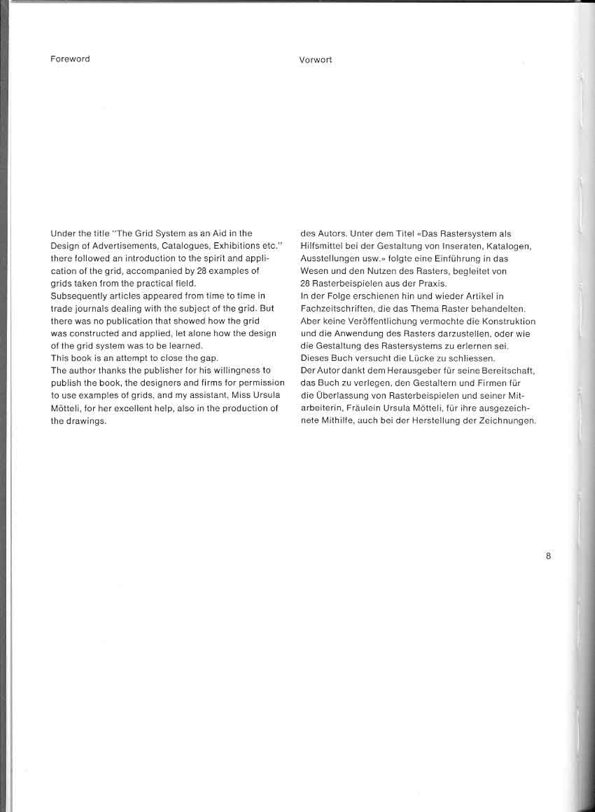
前言（续）
我们今天所知的网格作为秩序原则，当时尚未被发明。然而，朝着这个方向迈出的第一步已经出现，人们在努力实现排版资源的最大化秩序和经济性使用。
本书所介绍的网格系统原则，是在第二次世界大战后在瑞士发展和应用的。四十年代后半期，出现了第一批使用网格设计的印刷品。这一新趋势的特征是：基于严格原则的文本和图像构思、所有页面布局的统一性，以及主题呈现的客观态度。
1961年，作者在《图形艺术家及其设计问题》（Gestaltungsprobleme des Grafikers，Niggli出版社）一书中首次以文字和图片简要介绍了网格系统。随后，以"网格系统作为广告、目录、展览等设计的辅助工具"为题，介绍了网格的精神和应用，并附有23个来自实践领域的网格示例。
此后，行业期刊中不时出现讨论网格主题的文章。但没有一本出版物展示网格是如何构建和应用的，更不用说如何学习网格系统的设计了。本书就是试图填补这一空白。
原文参考 (OCR)
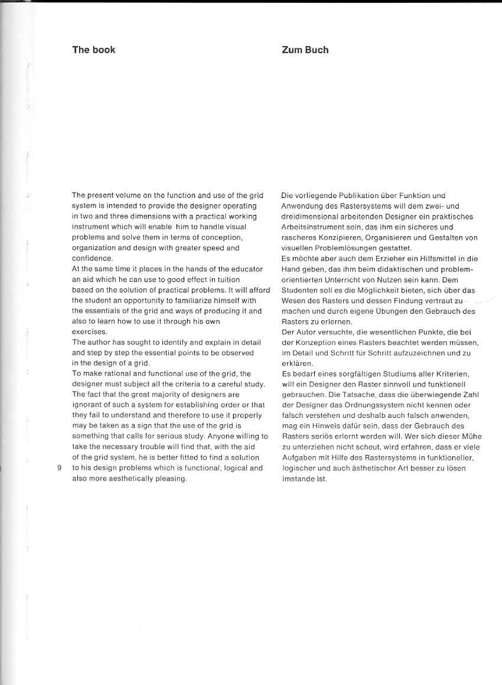
关于本书
本卷关于网格系统的功能和使用，旨在为在二维和三维领域工作的设计师提供一个实用的工作工具，使他能够以更快的速度和更强的信心来处理视觉问题，并在构思、组织和设计方面加以解决。
同时，它也为教育工作者提供了一种辅助工具，可用于基于实际问题解决的教学。它使学生有机会熟悉网格的基本要素和制作方法，并通过自己的练习学习如何使用它。
作者试图详细地、逐步地识别和解释网格设计中需要关注的关键点。要合理、功能性地使用网格，设计师必须仔细研究所有标准。绝大多数设计师不了解这种建立秩序的系统，或者不理解因而不能正确使用它，这一事实可能表明，使用网格是需要认真学习的。任何愿意付出必要努力的人都会发现，借助网格系统，他能够更好地找到功能性的、逻辑的、同时也是美学上更令人愉悦的设计问题解决方案。
原文参考 (OCR)
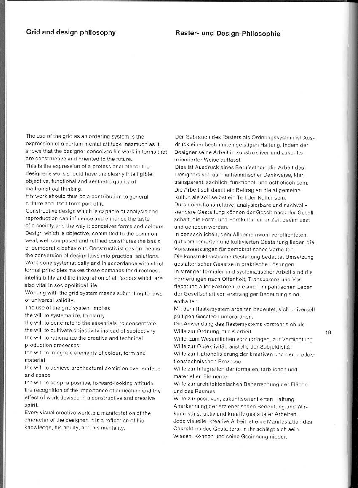
网格与设计哲学
使用网格作为秩序系统，是某种精神态度的表达，因为它表明设计师以一种建设性的、面向未来的方式构思他的作品。
这是一种职业精神的表达：设计师的工作应该具有清晰易懂、客观、功能性和美学品质，如同数学思维一样。
因此，他的工作应该是对普遍文化的贡献，并且本身成为文化的一部分。
具有可分析性和可复制性的建设性设计，能够影响和提升一个社会的品味及其对形式和色彩的理解方式。客观的、致力于公共福祉的、精心构图和精炼的设计，构成了民主行为的基础。构成主义设计意味着将设计法则转化为实践解决方案。系统性的、按照严格形式原则进行的工作，体现了对直接性、清晰性和所有因素整合的要求——这些在社会政治生活中也至关重要。
使用网格系统意味着服从普遍有效的法则。
原文参考 (OCR)
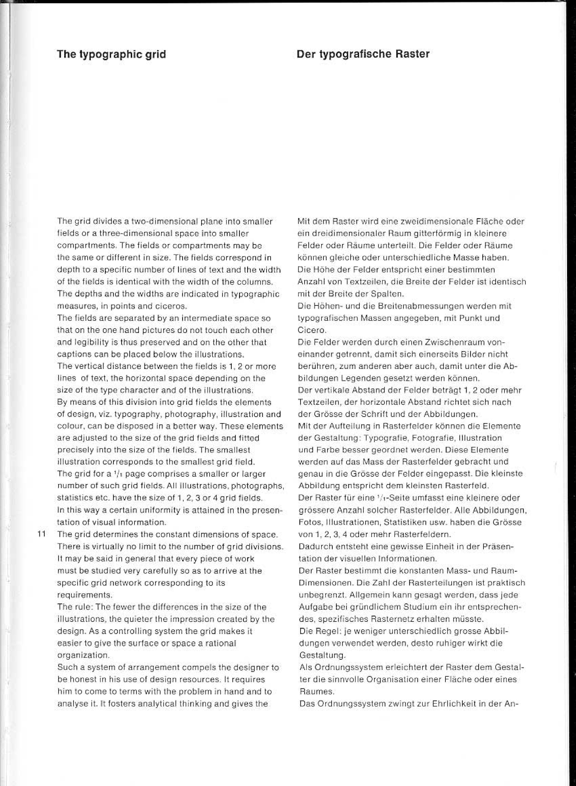
网格与设计哲学（续）
使用网格系统意味着：
- 系统化的意志，澄清的意志
- 深入本质的意志，集中的意志
- 培养客观性而非主观性的意志
- 合理化创意和技术生产过程的意志
- 整合色彩、形式和材料元素的意志
- 在表面上和空间中实现建筑学般掌控的意志
- 采取积极、前瞻性态度的意志
- 承认教育的重要性以及建设性和创造性工作的效果
每一件视觉创意作品都是设计师性格的体现。它是他的知识、能力和心态的反映。
原文参考 (OCR)
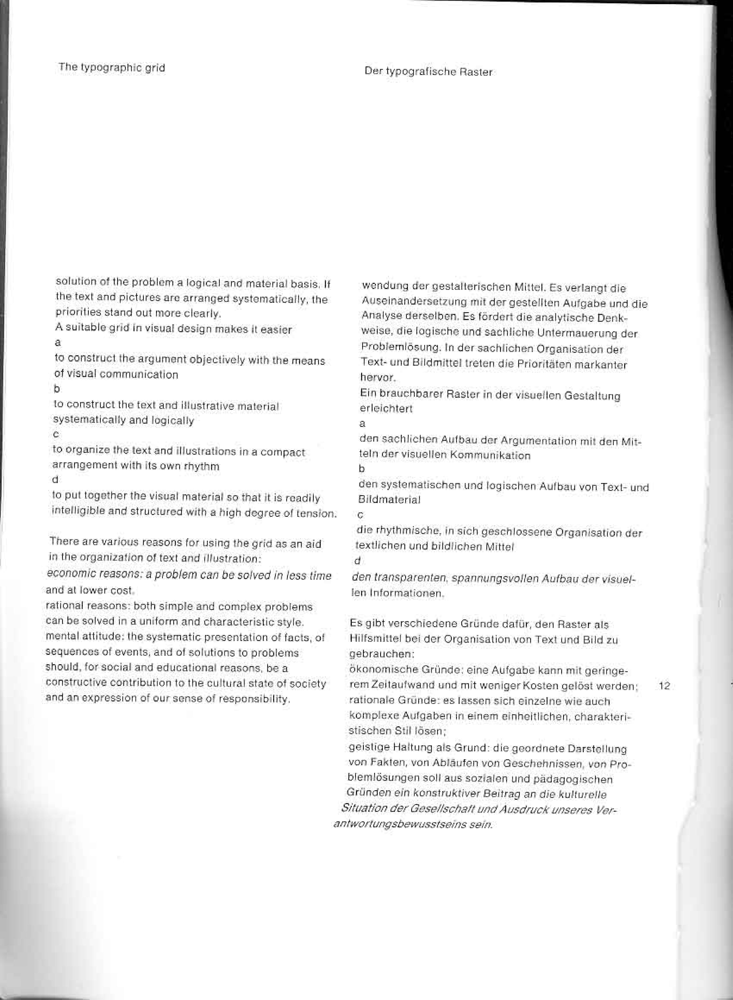
排版网格
排版网格是一种用于在页面或屏幕上组织文本和图像的系统。它由一系列水平和垂直的引导线组成，将页面划分为栏、行和模块。
网格使设计师能够以逻辑和一致的方式安排各种元素，同时保持视觉的多样性和趣味性。它是一种规划工具，而非束缚——网格应该被理解为一个框架，在其中可以发展出无限的创意解决方案。
一个好的网格能够建立视觉层次，引导读者的眼睛按预期顺序浏览内容，并创造一种秩序感和专业感。
原文参考 (OCR)
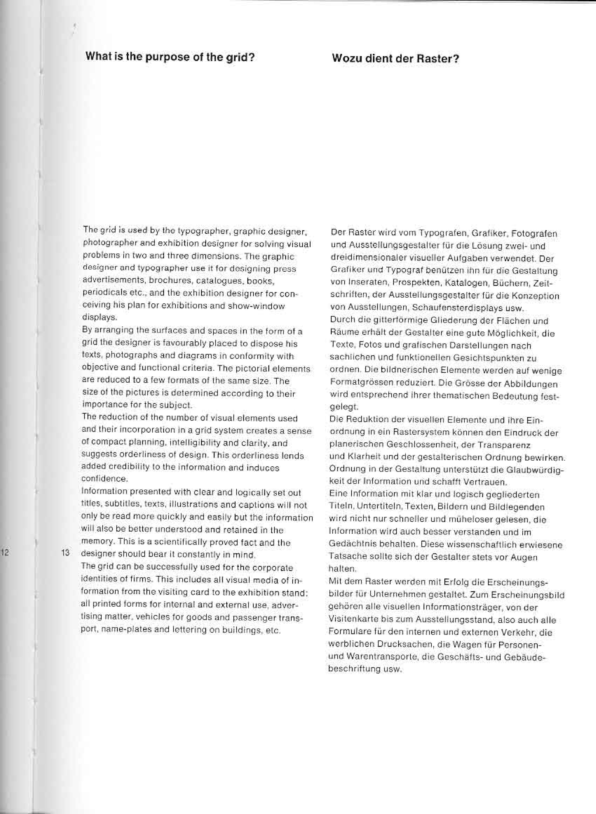
排版网格（续）
排版网格由以下部分组成：
- 版心——页面上被文本和图像占据的区域
- 栏——版心内文本排布所依据的垂直分区
- 模块——由栏和行的交叉形成的独立单元
- 空间区——模块之间的间距
- 页边距——版心周围的空白区域
- 流线——引导读者眼睛的水平线
- 标记——指示文本或图像位置的辅助元素
在构建网格时，设计师必须考虑文本的数量和类型、图像的种类和尺寸、出版物或产品的性质，以及目标受众。
原文参考 (OCR)
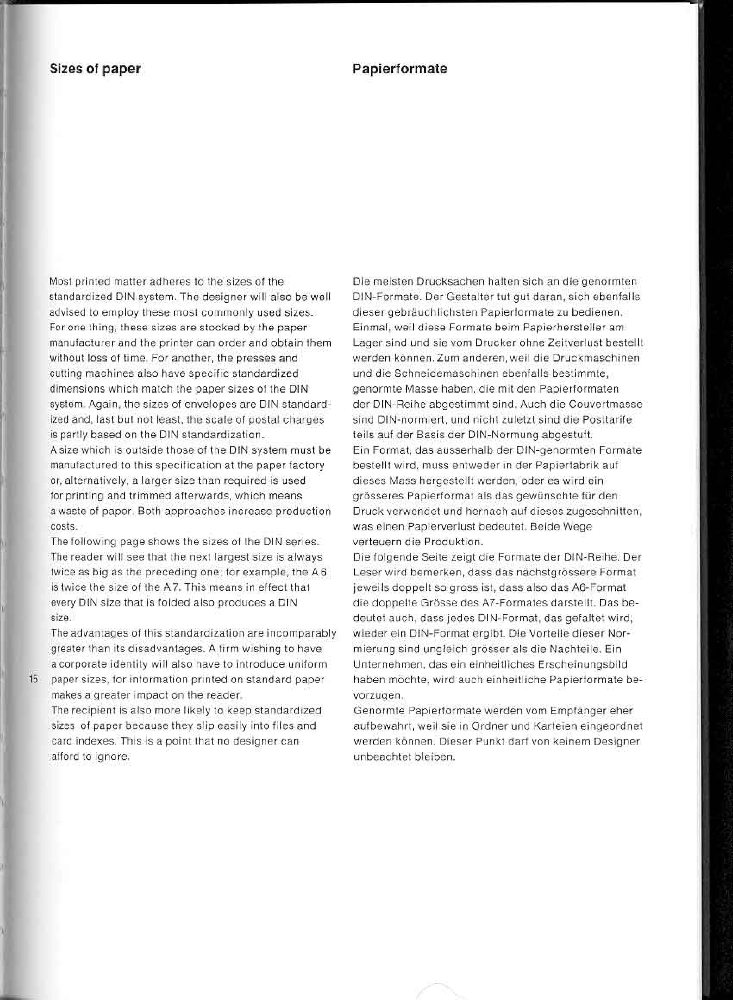
纸张尺寸
纸张尺寸的标准化是排版工作合理化的一个重要因素。DIN系统（德国工业标准）提供了一系列基于√2比例（1:1.414）的纸张尺寸，这意味着每个尺寸都是前一个尺寸的一半或两倍。
最常用的DIN尺寸是：
- A0（841×1189mm）——最大的标准尺寸
- A1（594×841mm）——A0的一半
- A2（420×594mm）——A1的一半
- A3（297×420mm）——A2的一半
- A4（210×297mm）——最常用的办公尺寸
- A5（148×210mm）——A4的一半
- A6（105×148mm）——明信片尺寸
这个系统的优势在于，无论纸张如何折叠或切割，比例始终保持一致。
原文参考 (OCR)
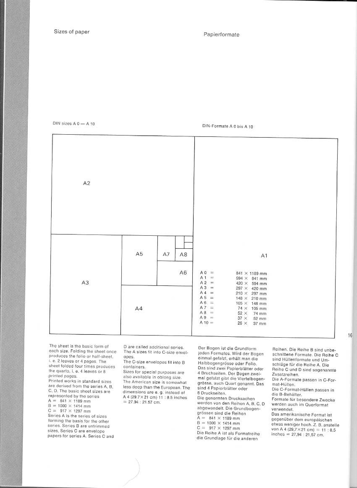
纸张尺寸（续）
除了DIN A系列，还有B系列和C系列。B系列提供介于A系列尺寸之间的中间尺寸，而C系列用于信封，设计为可以容纳相应的A系列纸张。
了解纸张尺寸对于设计师至关重要，因为它影响设计的各个方面——从网格的构建到页边距的确定，从字体大小的选择到印刷成本的计算。
标准化纸张尺寸的使用使得不同印刷品之间能够实现统一性和可比性，并简化了生产、储存和分销过程。
原文参考 (OCR)
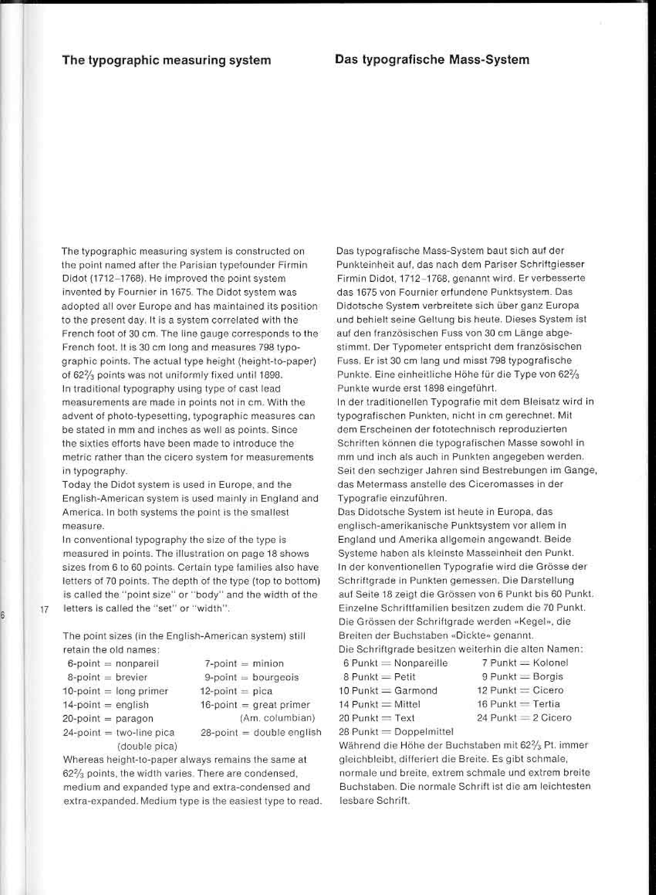
排版测量系统
排版测量系统基于点（point）和派卡（pica）或西塞罗（cicero）单位。在英语国家，1点等于0.0138英寸（约0.351mm），12点等于1派卡。在欧洲大陆，使用的是迪多（Didot）系统，其中1点等于0.376mm，12点等于1西塞罗。
在现代排版中，这些系统已经被统一的度量系统所补充，但点和派卡仍然是定义字体大小、行距和间距的标准单位。
最常见的字体大小范围从6点到72点。正文通常使用8到12点的字体，标题使用更大的尺寸。字体的x高度（小写字母的高度）和升部/降部影响其视觉大小——相同点数的两种字体可能看起来大小不同。
原文参考 (OCR)
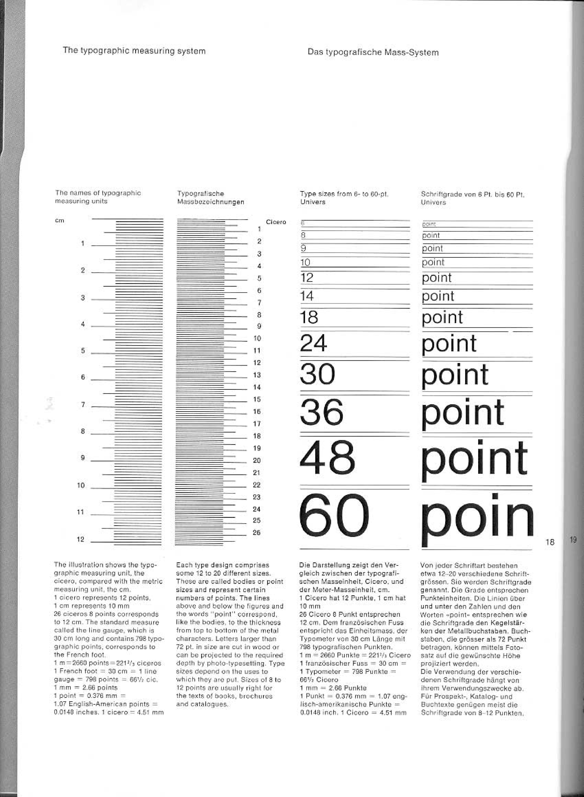
排版测量系统（续）
行距（leading）以点为单位测量，指一行基线到下一行基线之间的距离。适当的行距对于可读性至关重要。通常，行距应比字体大小大约20%到30%。例如，10点字体通常需要12点的行距（写作10/12）。
栏宽通常以派卡或西塞罗为单位测量，也可以通过栏中能容纳的字符数来定义。理想的栏宽有赖于字体大小、行距和文本的性质。
此外，还有其他测量单位，如em（当前字体大小中大写字母M的宽度）、en（em的一半）和齿（agate，用于报纸广告）。
原文参考 (OCR)
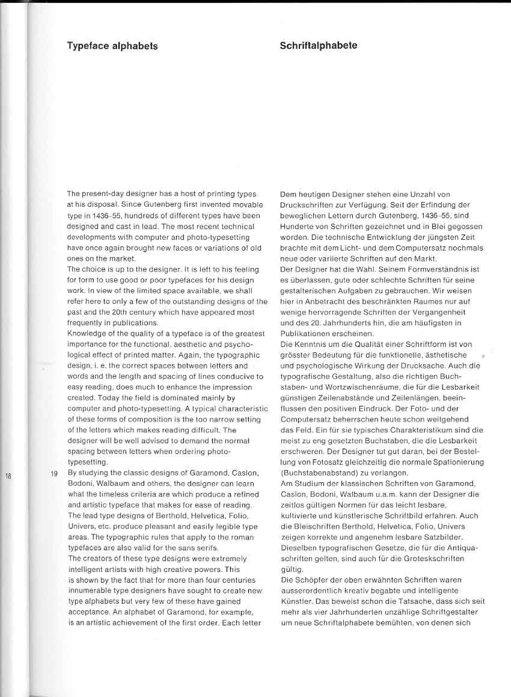
排版测量系统（续）
排版测量系统为设计师提供了一个精确的框架，用于定义和沟通设计决策。它使字体大小、栏宽、页边距和间距的精确规格成为可能。
在现代数字排版中，这些测量系统仍然是基础。桌面出版软件使用点和派卡作为默认单位，CSS和网页设计使用像素、em和rem，但这些单位之间存在着特定的转换关系。
了解排版测量系统使设计师能够精确地控制排版的各个方面，并确保设计的一致性和专业质量。
原文参考 (OCR)
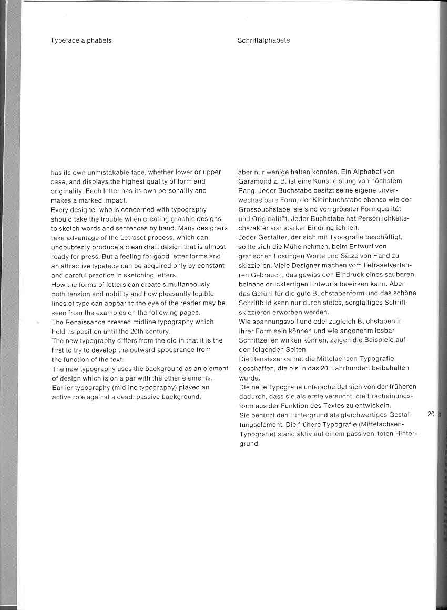
字体字母表
每个字母表，无论是小写还是大写，都有其独特的面貌，展现出最高的形式品质和原创性。每个字母都有自己的个性，产生显著的视觉冲击。
每一位从事排版工作的设计师，在创作平面设计时都应花时间手工绘制单词和句子。许多设计师利用Letraset工艺，这无疑可以产生干净的草图设计，几乎可以直接用于印刷。但只有通过持续和仔细的字母绘制练习，才能获得对良好字母形式和优美字体的感觉。
字母的形式如何能够同时创造张力和高贵感，以及令人愉悦的易读文字行如何呈现给读者的眼睛，可以从以下页面的示例中看出。
文艺复兴时期创造了中轴排版，这一传统一直保持到20世纪。
新排版学与旧的区别在于，它首次尝试从文本的功能出发来发展外观形式。新排版学将背景作为与其他元素同等重要的设计元素。早期排版学（中轴排版）在一个死寂的、被动的背景上扮演活跃角色。
原文参考 (OCR)
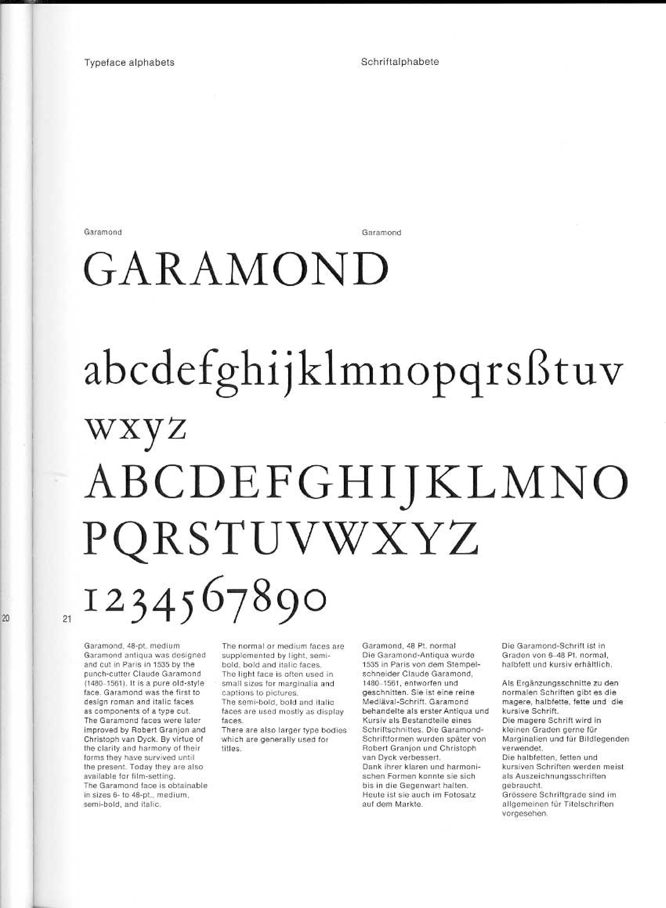
字体字母表（续）
字体选择是排版设计中最关键的决定之一。每种字体都有自己的声音、个性和历史。衬线字体传达传统、权威和可读性；无衬线字体表达现代性、清晰和直接；手写体带来优雅和个性；装饰性字体吸引注意力但应谨慎使用。
关键分类包括：
- 旧风格（Old Style）——如Garamond、Caslon，具有适中的粗细对比和倾斜的衬线
- 过渡体（Transitional）——如Baskerville，粗细对比更明显
- 现代体（Modern）——如Bodoni、Didot，极端的粗细对比和水平衬线
- 埃及体（Egyptian/Slab Serif）——如Rockwell、Clarendon，粗重的方形衬线
- 无衬线体（Sans Serif）——如Helvetica、Univers、Futura，没有衬线
原文参考 (OCR)
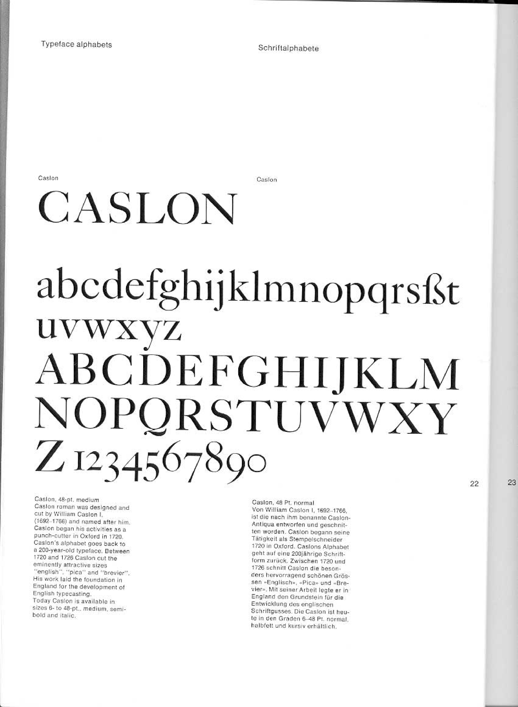
字体字母表（续）
字母的形式是数百年演变的产物。从罗马碑文到加洛林小写体，从意大利文艺复兴的人文主义字体到启蒙运动时期的理性主义字体，每种字体风格都反映了其时代的审美和精神。
在现代平面设计中，字体的选择应基于以下考虑：
- 可读性——字体必须清晰易读，尤其是在小尺寸下
- 适用性——字体必须适合其用途（正文、标题、广告等）
- 协调性——字体必须与设计中的其他元素和谐共存
- 表达性——字体应传达设计预期的情感和信息
原文参考 (OCR)
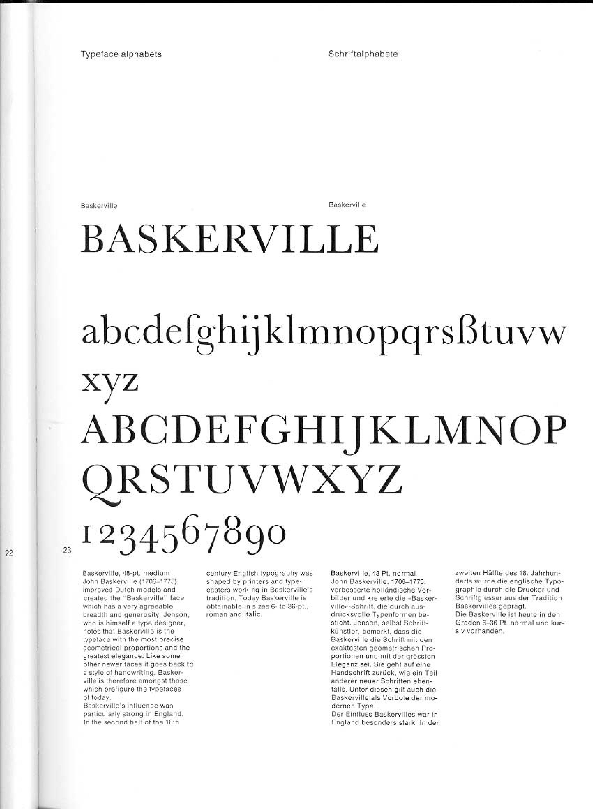
字体字母表：Baskerville
Baskerville，48点，中等粗细。John Baskerville（1706-1775）改进了荷兰字体模型，创造了"Baskerville"字体，该字体具有令人愉悦的宽阔和大气感。Jenson本人也是一位字体设计师，他指出Baskerville是以最精确的几何比例和最高雅的气质创作出来的字体。
与一些其他较新的字体一样，Baskerville的起源可以追溯到一种手写风格。因此，Baskerville属于那些预示了当今字体风格的先驱字体之一。Baskerville的影响力在18世纪下半叶的英国尤为强大，当时英国的排版学是由继承Baskerville传统的印刷商和字体铸造师塑造的。如今，Baskerville有6点到48点的多种字号，包括正体和斜体。
原文参考 (OCR)
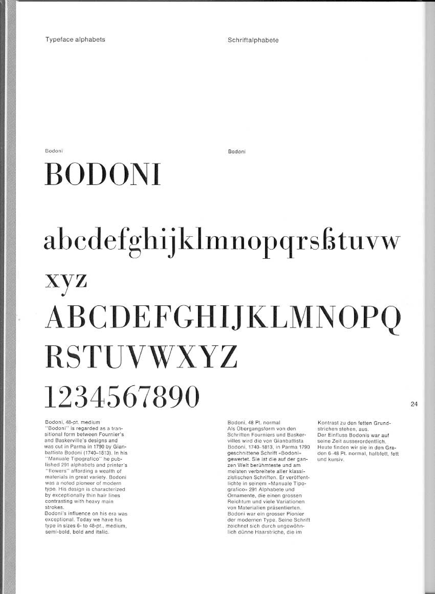
字体字母表：Bodoni
Bodoni，42点，中等粗细。"Bodoni"被视为Fournier和Baskerville设计之间的过渡形式，由Giambattista Bodoni（1740-1813）于1790年在帕尔马雕刻。在他的《字体排印手册》（Manuale Tipografico）中，他发表了284种字母表和印刷装饰花边，提供了丰富多样的材料。
Bodoni是现代字体的著名先驱，他的设计以极细的发丝线与粗重的主笔画形成对比为特征。Bodoni对他所处时代的影响是非凡的。如今，我们有6点到48点的Bodoni字体，包括中等、半粗、粗体和斜体。
原文参考 (OCR)
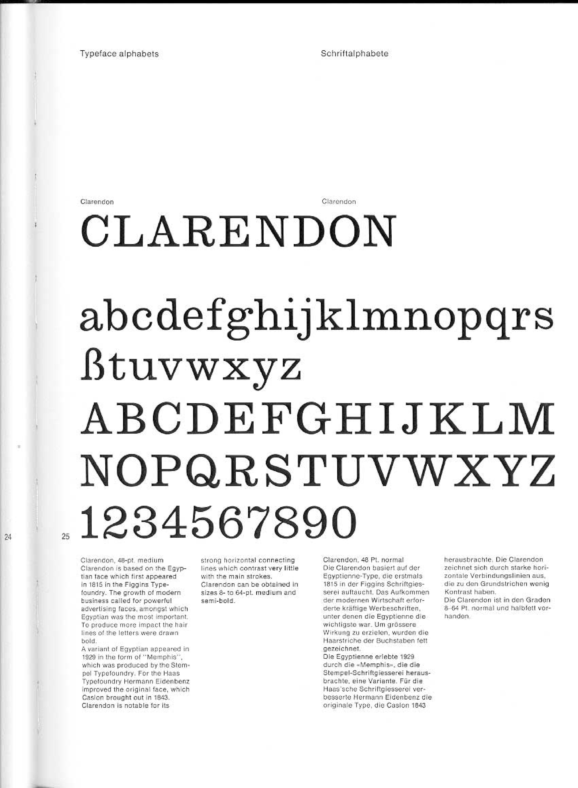
字体字母表：Clarendon
Clarendon，48点，中等粗细。Clarendon基于埃及体（Egyptian face），该字体于1815年首次出现在Figgins字体铸造厂。现代商业的发展需要强有力的广告字体，其中埃及体是最重要的。为了产生更大的视觉冲击力，字母的发丝线被加粗了。
一种变体"Memphis"于1929年由Stempel字体铸造厂推出。Hermann Eidenbenz为Haas字体铸造厂改进了原始字体，而Caslon于1843年推出了该字体。Clarendon以强烈的水平连接线为特征，这些连接线与主笔画的对比度很小。Clarendon有6点到64点的字号，包括中等和半粗体。
原文参考 (OCR)
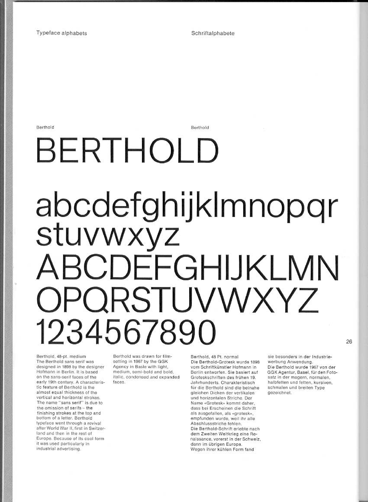
字体字母表：Berthold（无衬线体）
Berthold，48点，中等粗细。Berthold无衬线体由设计师Hofmann于1894年在柏林设计。它基于19世纪初的无衬线字体。一个特征性特点是垂直和水平笔画的粗细几乎相等。
"无衬线"（sans serif）这个名称源于省略了衬线——即字母顶部和底部的收尾笔画。Berthold在二战后经历了一次复兴，首先在瑞士，然后在欧洲其他地区。由于其冷静的形式，它特别被用于工业广告。1967年由巴塞尔的GOK Agency为照相排版绘制，包括细体、中等、半粗、粗体、斜体、窄体和宽体等多种变体。
原文参考 (OCR)
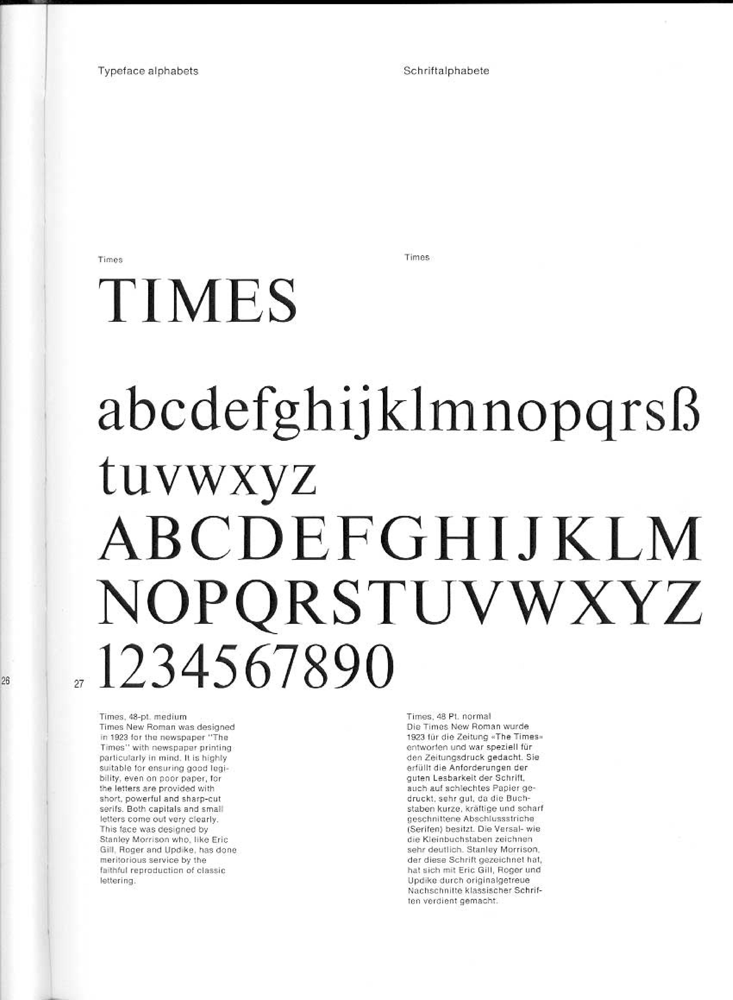
字体字母表：Times New Roman
Times，48点，中等粗细。Times New Roman于1932年为《泰晤士报》设计，特别考虑了报纸印刷的需求。它非常适合确保良好的可读性，即使在劣质纸张上也是如此，因为字母带有短而有力、切割锐利的衬线。大写字母和小写字母都非常清晰。
该字体由Stanley Morison设计，他像Eric Gill、Roger和Updike一样，通过忠实再现经典字体而为排版学做出了卓越贡献。
原文参考 (OCR)
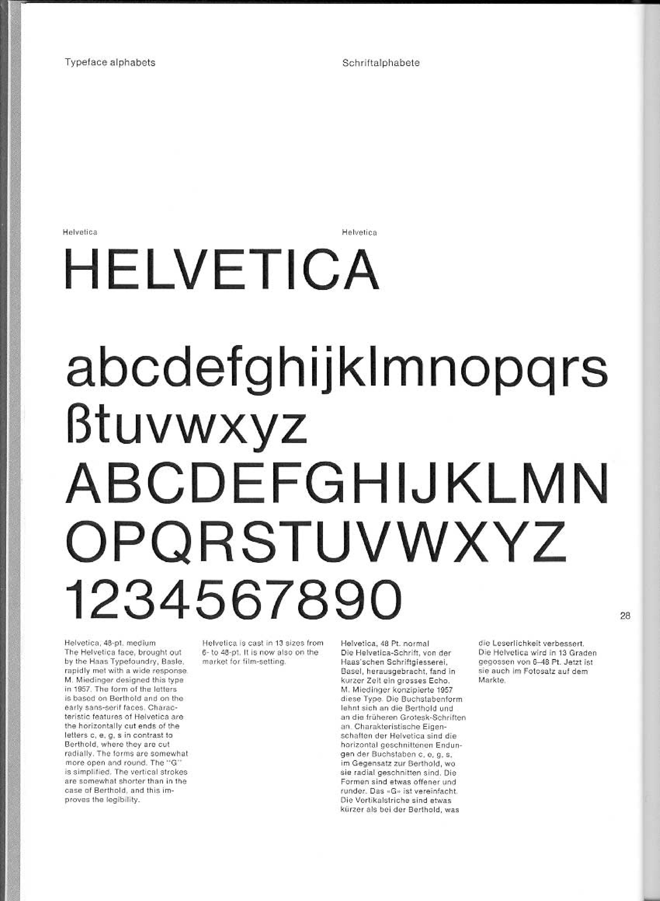
字体字母表：Helvetica
Helvetica，44点，中等粗细。由巴塞尔的Haas字体铸造厂推出，迅速获得了广泛的响应。M. Miedinger于1957年设计了这款字体。字母的形式基于Berthold和早期的无衬线字体。
Helvetica的特征性特点是字母c、e、g、s的水平切割末端（与Berthold的放射状切割形成对比）。其形式更加开放和圆润。"G"被简化了。垂直笔画比Berthold略短，这提高了可读性。Helvetica有13种字号，从6点到48点，同时也适用于照相排版。
原文参考 (OCR)
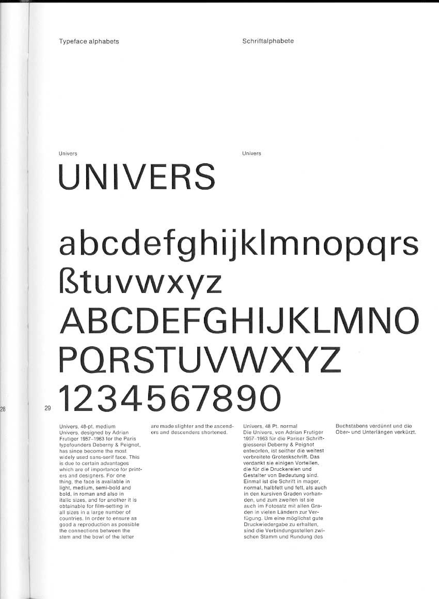
字体字母表：Univers
Univers，48点，中等粗细。由Adrian Frutiger于1957-1963年为巴黎的Deberny & Peignot字体铸造厂设计，此后成为使用最广泛的无衬线字体。这归功于几个优势：它有细体、中等、半粗和粗体，有正体和斜体，并且可以在许多国家以照相排版的方式获得各种字号。
为了确保良好的印刷效果，字母的竖干与字碗之间的连接处做得更细，升部和降部被缩短了。Univers字体系列的系统化设计方法使其成为20世纪最成功的字体之一，也是网格系统设计的理想选择。
原文参考 (OCR)
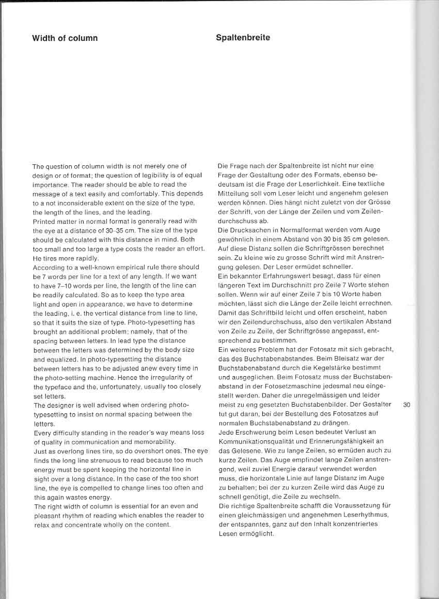
栏宽
选择使文本阅读愉悦的栏宽是最重要的排版问题之一。栏宽必须与字体大小成比例。过长的栏会使眼睛疲劳，并产生不良的心理影响。过短的栏也会造成干扰，因为它们打断阅读的流畅性，迫使眼睛过快地换行。
过短或过长的行都会降低对所读内容的记忆，因为需要消耗过多的精力。有一条规则说，如果一栏的平均宽度能容纳10个单词，就易于阅读。对于较长的文本，这是一个实用的标准。少量文本可以排成很长或很短的行而不会干扰读者。
栏宽取决于字体大小和文本量。20点的字体需要相对较宽的栏，8点的字体需要相对较窄的栏。
原文参考 (OCR)
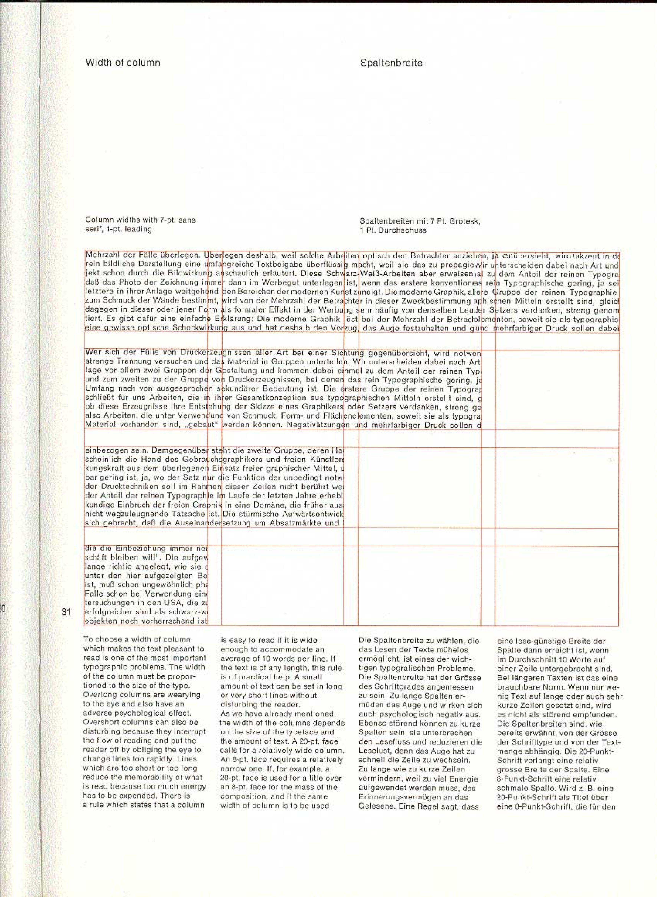
栏宽（续）
一个重要的考虑是栏宽与行距之间的关系。宽栏需要更大的行距来帮助眼睛找到下一行的开头。窄栏可以使用较小的行距，因为眼睛不需要在水平方向上移动太远。
在杂志和报纸等出版物中，栏宽通常由页面中栏的数量决定。常见的配置包括：
- 单栏——用于书籍和报告，提供最大的阅读舒适度
- 双栏——用于杂志和通讯，在空间利用和可读性之间取得平衡
- 三栏——用于报纸和目录，最大化信息密度
- 四栏或更多——用于参考书和数据密集型出版物
原文参考 (OCR)
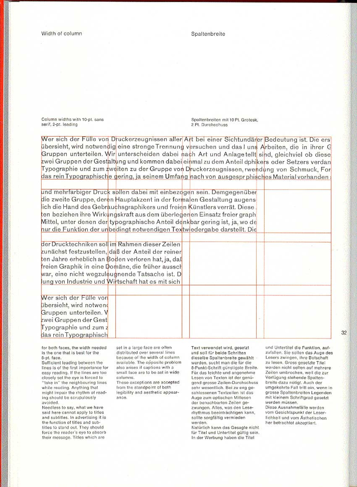
栏宽（续）
在设计网格时，栏宽的选择应基于文本的类型和数量。散文文本需要较宽的栏，而列表、表格和短信息可以使用较窄的栏。
一个好的经验法则：正文栏应包含45到75个字符（包括空格）per line。这确保了一行中既有足够的单词来维持阅读节奏，又不会太长以至于眼睛难以找到下一行的开头。
对于双语或多语言出版物，栏宽可能需要调整以适应不同语言的平均单词长度。德语单词通常比英语单词长，因此可能需要更宽的栏。
原文参考 (OCR)
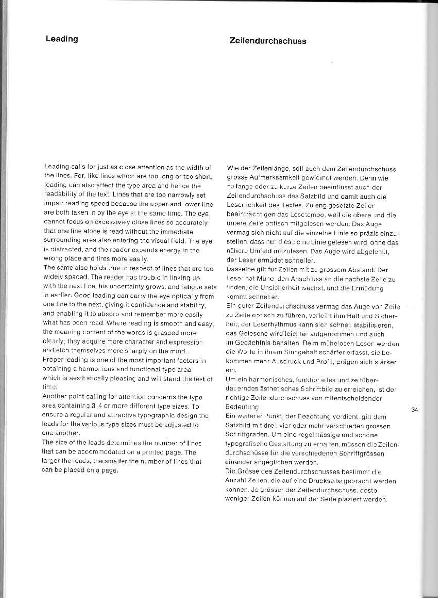
栏宽（续）
栏宽也与纸张尺寸和页边距相关。在DIN A4页面上，合理的栏宽通常在50到70毫米之间（对于两栏布局）。对于书籍（通常为DIN A5或类似尺寸），单栏宽度约为100到120毫米。
在确定栏宽时，还应考虑插图的大小。如果栏太窄，大幅插图可能需要跨栏放置，这会影响网格的一致性和灵活性。
原文参考 (OCR)
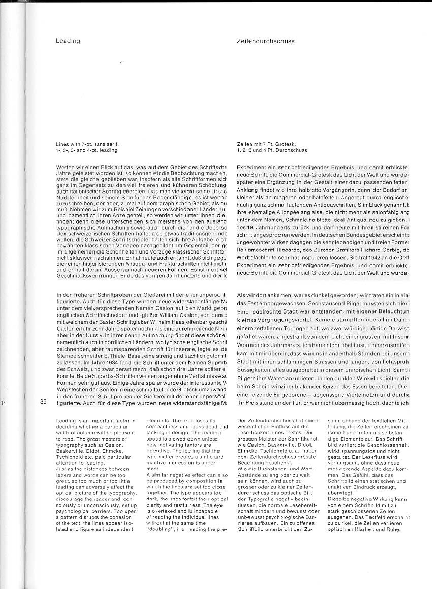
行距
行距与行长一样需要密切关注。正如过长或过短的行会影响排版区域和文本的可读性，行距同样如此。行距过窄会降低阅读速度，因为上下两行同时被眼睛捕捉。眼睛无法精确聚焦在如此紧密的行上，以至于只读一行而不受周围区域的影响。眼睛被分散注意力，读者在错误的地方消耗精力，更容易疲劳。
行距过宽也同样适用。读者难以与下一行建立联系，不确定性增加，疲劳更快到来。良好的行距能够从视觉上引导眼睛从一行到下一行，给予它信心和稳定性，使其更容易吸收和记住所读内容。当阅读流畅而轻松时，词语的意义内容被更清晰地把握；它们获得更多的性格和表达力，更深刻地铭刻在脑海中。
原文参考 (OCR)
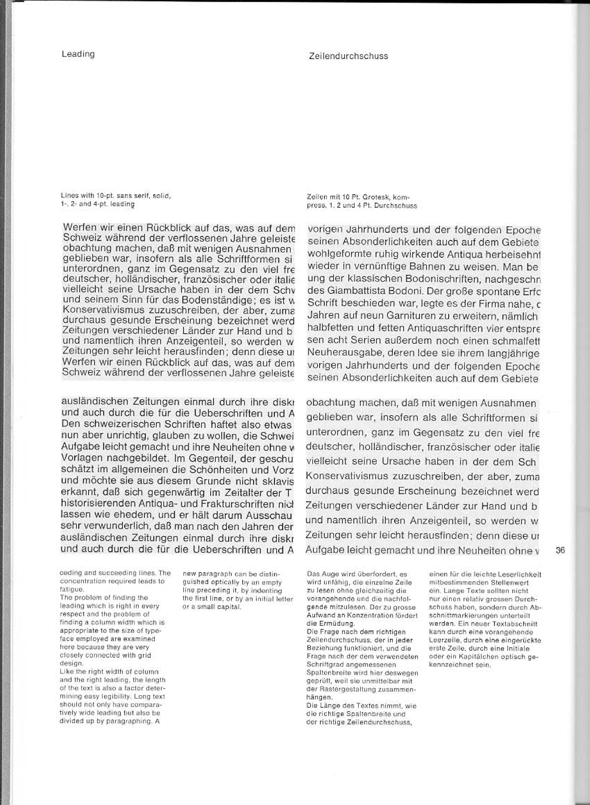
行距（续）
正确的行距是获得和谐、功能性、经得起时间考验的排版区域的最重要因素之一。
另一个值得关注的问题是包含3、4种或更多不同字体大小的排版区域。为了确保规则且吸引人的排版设计，各种字体大小的行距必须相互协调。
行距的大小决定了印刷页面上可以容纳的行数。行距越大，页面上可以放置的行数越少。
行距是决定特定栏宽是否阅读舒适的重要因素。排版大师们，如Caslon、Baskerville、Bodoni、Ehmcke、Tschichold等，都对行距给予了特别关注。
原文参考 (OCR)
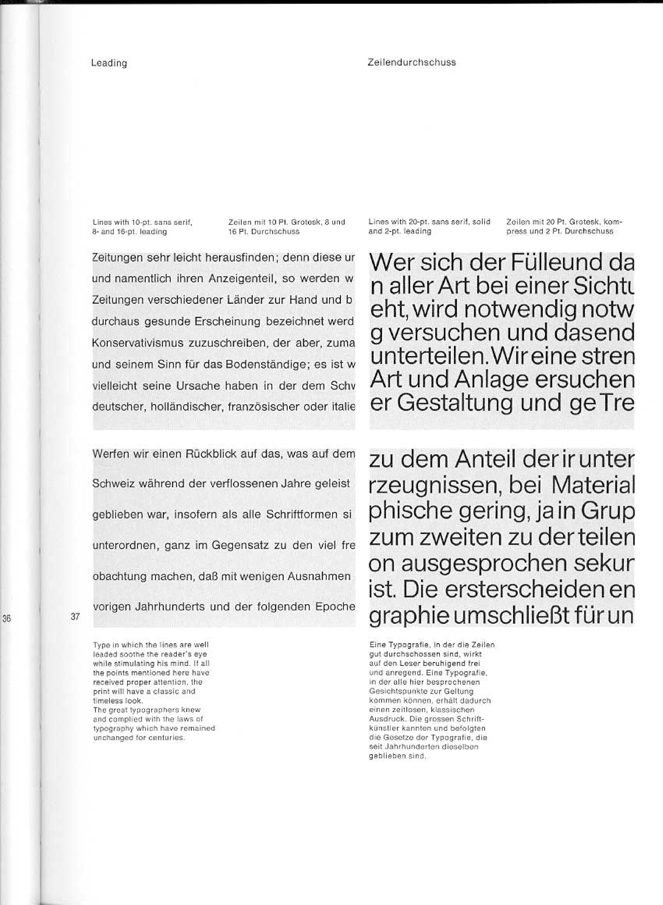
行距（续）
正如字母间距和词间距可以过大或过小，行距过大或过小也会对排版的光学图像产生负面影响，降低正常的阅读意愿，并有意识或无意识地建立心理障碍。
过于开放的排版图像会打断文本信息的连贯性，行显得过于孤立，作为独立元素出现。排版图像失去了紧凑性，显得缺乏张力和设计感。阅读速度被减慢，而没有新的激励因素加入。感觉排版图像产生了静态和不活跃的印象，这种感觉占主导地位。
同样，行距过紧的排版也会产生类似的负面效果。文本区域显得过于暗淡，行失去了光学上的清晰度和宁静感。眼睛被过度使用，无法在不"双重阅读"（即同时阅读前后行）的情况下阅读单行。
原文参考 (OCR)
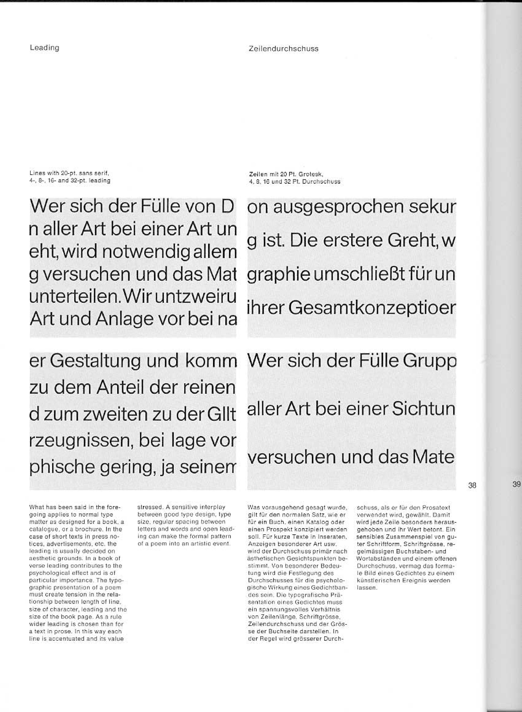
行距（续）
正确的行距在视觉美学和功能可读性之间建立平衡。它应该：
- 在连续的行之间创建清晰的视觉分隔
- 使眼睛能够轻松地从一行移动到下一行
- 产生均匀、和谐的排版纹理
- 与字体大小和栏宽协调一致
在数字排版中，默认行距通常设置为字体大小的120%。对于大多数正文，这提供了一个良好的起点，但特定字体、栏宽和设计目标可能需要调整。
原文参考 (OCR)
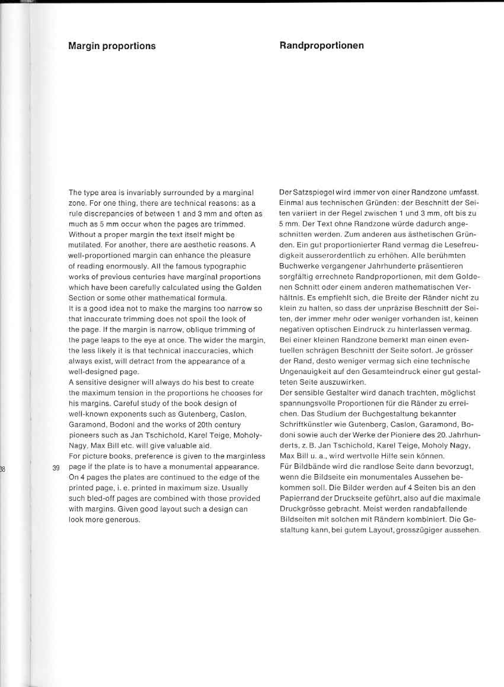
页边距比例
版心总是被页边距区域包围。一方面，有技术原因：在裁切页面时，通常会有1到3毫米的偏差，往往多达5毫米。没有适当的页边距，文本本身可能被损坏。另一方面，有美学原因。比例良好的页边距可以极大地增强阅读的愉悦感。
所有著名的过去几个世纪的书籍作品都有精心计算的页边距比例，使用黄金分割或其他数学公式。最好不要使页边距太窄，这样不精确的裁切就不会破坏页面的外观。如果页边距较窄，斜裁切立刻就会显现。页边距越宽，始终存在的技术不精确性就越不可能影响精心设计的页面的外观。
原文参考 (OCR)
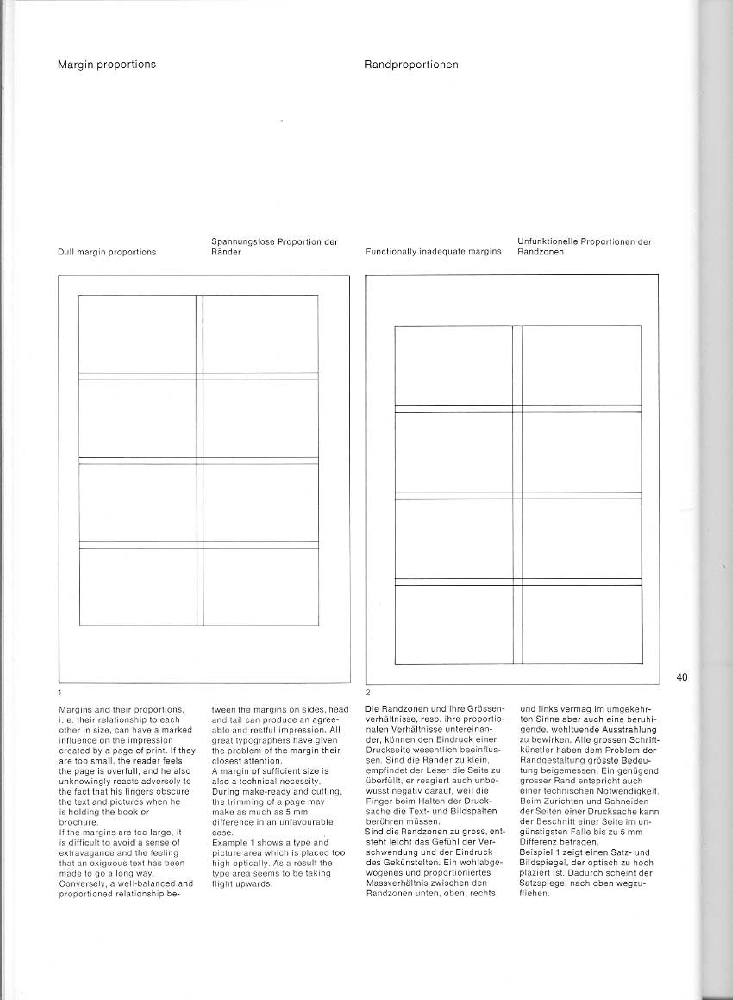
页边距比例（续）
敏锐的设计师总是尽力在他选择的页边距比例中创造最大的张力。仔细研究知名大师的书籍设计——如Gutenberg、Caslon、Garamond、Bodoni，以及20世纪先驱如Jan Tschichold、Karel Teige、Moholy-Nagy、Max Bill等人的作品——将提供宝贵的帮助。
对于画册，如果版面要呈现纪念碑般的外观，优先选择无边距页面。图像被延续到印刷页面的边缘，即以最大尺寸印刷。通常，这种出血页面与有页边距的页面结合使用。在良好的布局下，这种设计可以看起来更加大气。
原文参考 (OCR)
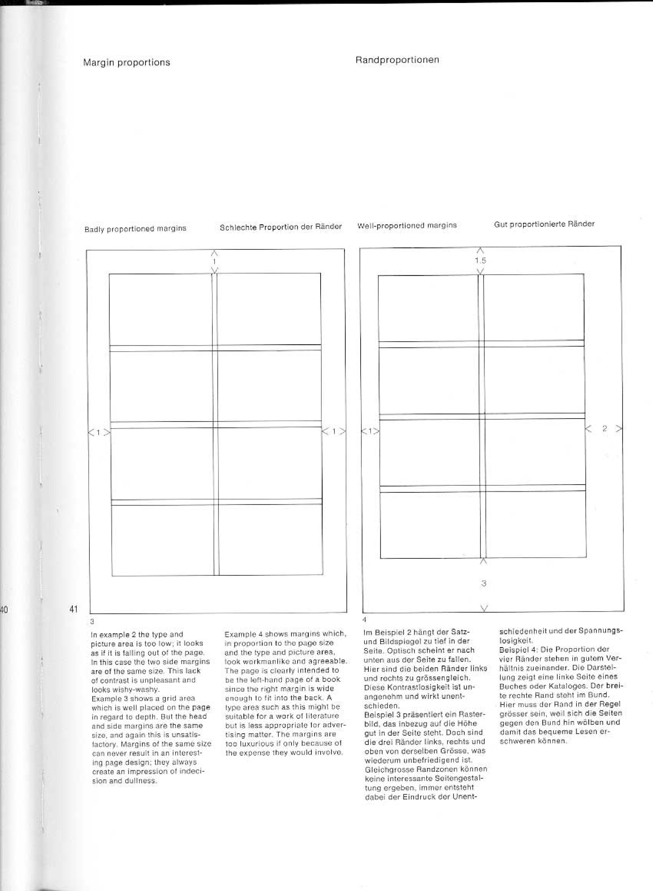
排版设计示例
本页展示了排版设计中的一个重要示例。通过系统化的方法，文本和图像被精确地组织在网格中。每个元素的位置都经过精心计算，以确保视觉和谐和信息层次清晰。这些示例帮助设计师理解网格原则在实际应用中的具体表现。
原文参考 (OCR)
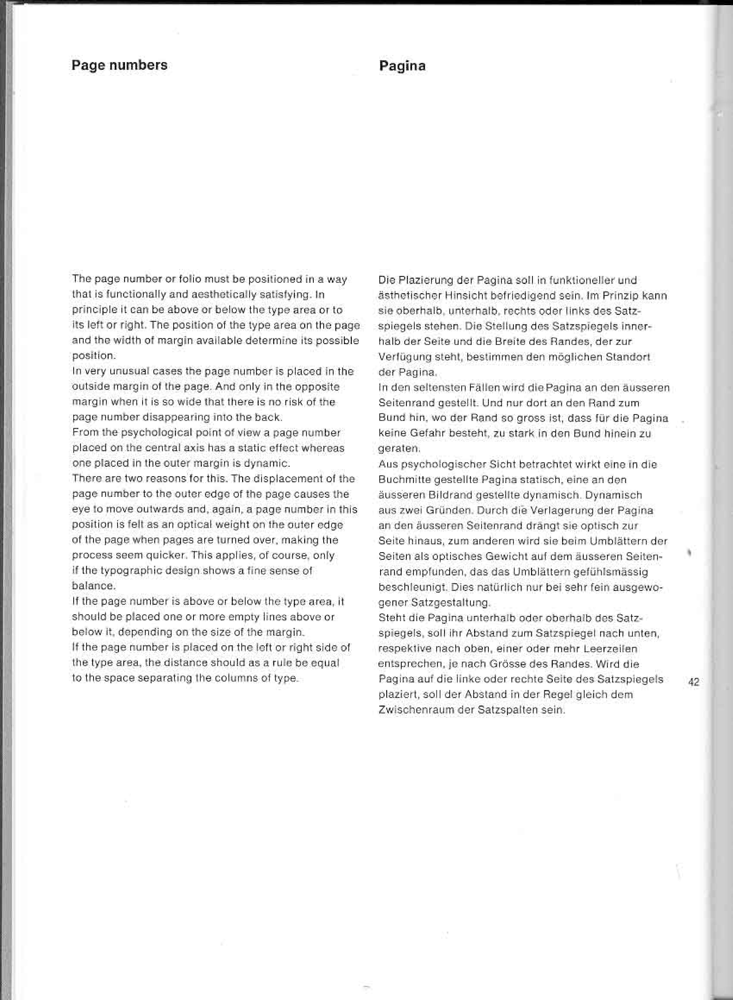
排版设计示例
本页展示了排版设计中的一个重要示例。通过系统化的方法，文本和图像被精确地组织在网格中。每个元素的位置都经过精心计算，以确保视觉和谐和信息层次清晰。这些示例帮助设计师理解网格原则在实际应用中的具体表现。
原文参考 (OCR)
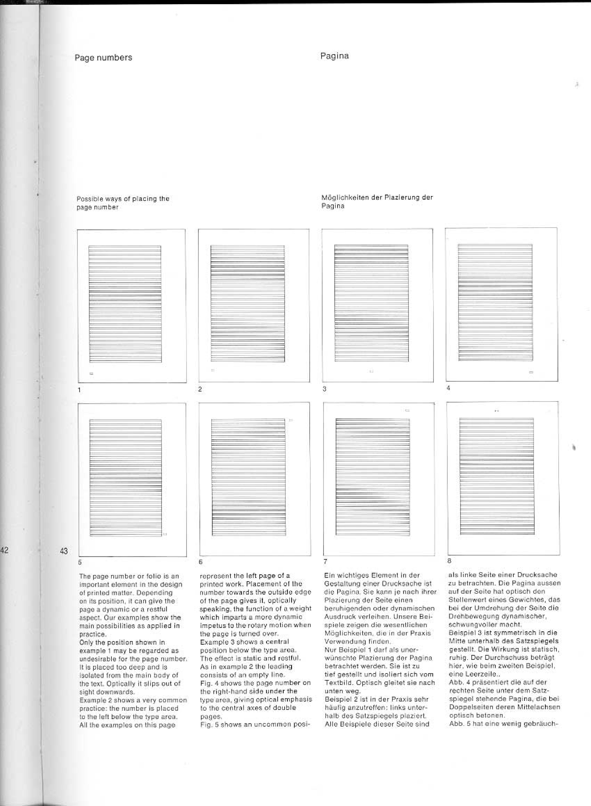
排版设计示例
本页展示了排版设计中的一个重要示例。通过系统化的方法，文本和图像被精确地组织在网格中。每个元素的位置都经过精心计算，以确保视觉和谐和信息层次清晰。这些示例帮助设计师理解网格原则在实际应用中的具体表现。
原文参考 (OCR)
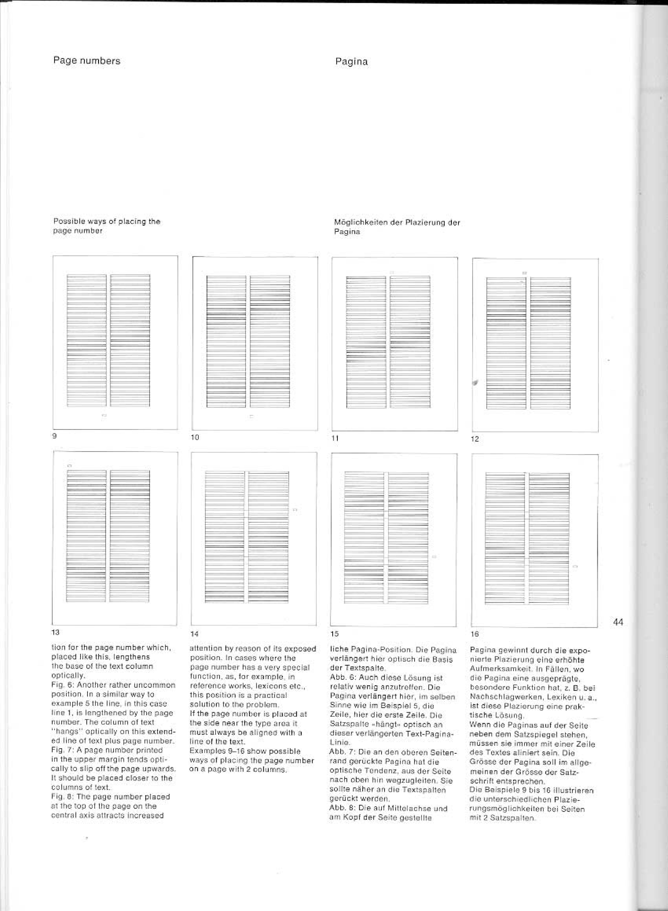
排版设计示例
本页展示了排版设计中的一个重要示例。通过系统化的方法，文本和图像被精确地组织在网格中。每个元素的位置都经过精心计算，以确保视觉和谐和信息层次清晰。这些示例帮助设计师理解网格原则在实际应用中的具体表现。
原文参考 (OCR)
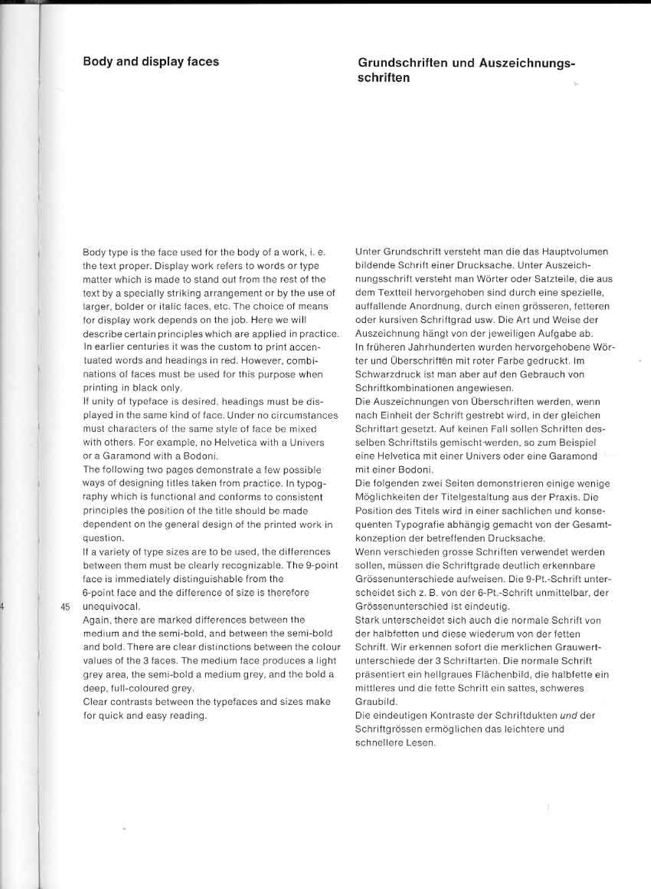
排版设计示例
本页展示了排版设计中的一个重要示例。通过系统化的方法，文本和图像被精确地组织在网格中。每个元素的位置都经过精心计算，以确保视觉和谐和信息层次清晰。这些示例帮助设计师理解网格原则在实际应用中的具体表现。
原文参考 (OCR)
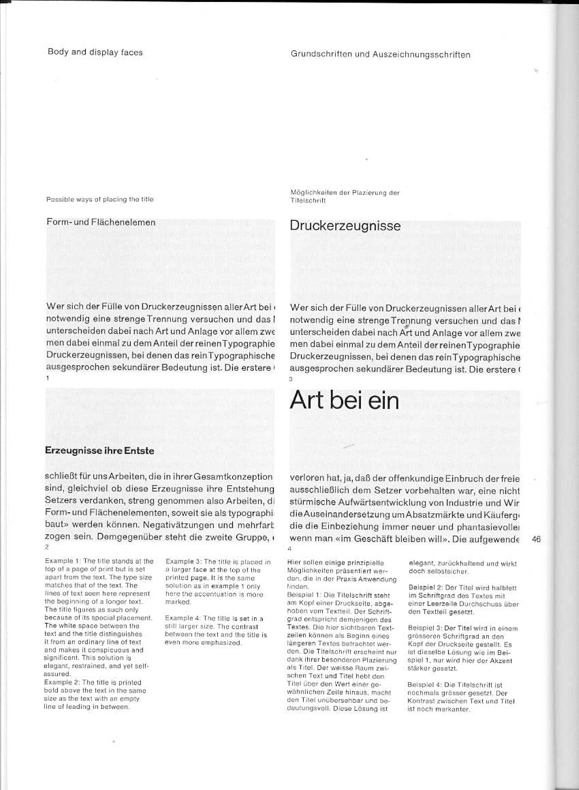
排版设计示例
本页展示了排版设计中的一个重要示例。通过系统化的方法，文本和图像被精确地组织在网格中。每个元素的位置都经过精心计算，以确保视觉和谐和信息层次清晰。这些示例帮助设计师理解网格原则在实际应用中的具体表现。
原文参考 (OCR)
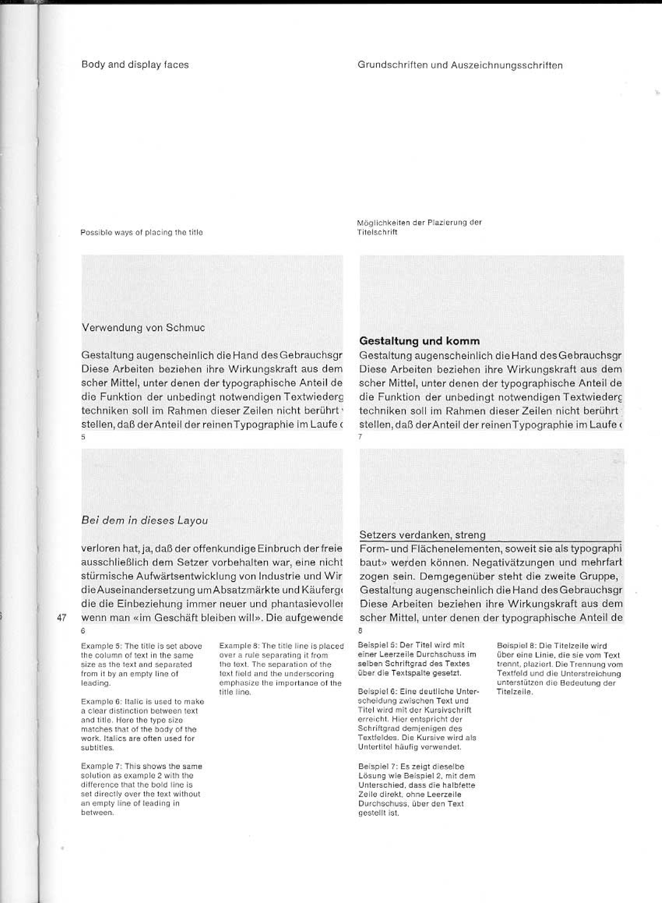
排版设计示例
本页展示了排版设计中的一个重要示例。通过系统化的方法，文本和图像被精确地组织在网格中。每个元素的位置都经过精心计算，以确保视觉和谐和信息层次清晰。这些示例帮助设计师理解网格原则在实际应用中的具体表现。
原文参考 (OCR)
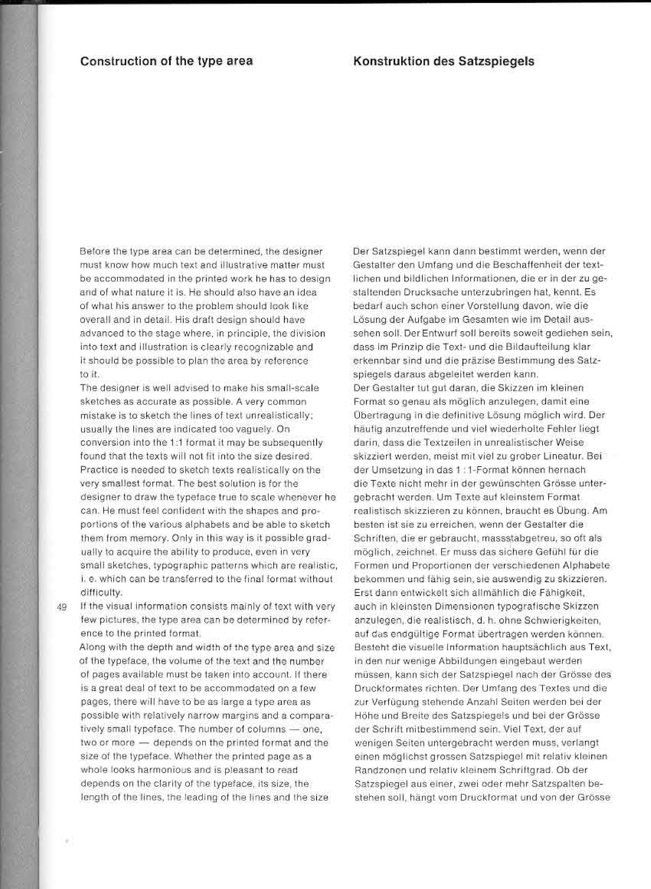
排版设计示例
本页展示了排版设计中的一个重要示例。通过系统化的方法，文本和图像被精确地组织在网格中。每个元素的位置都经过精心计算，以确保视觉和谐和信息层次清晰。这些示例帮助设计师理解网格原则在实际应用中的具体表现。
原文参考 (OCR)
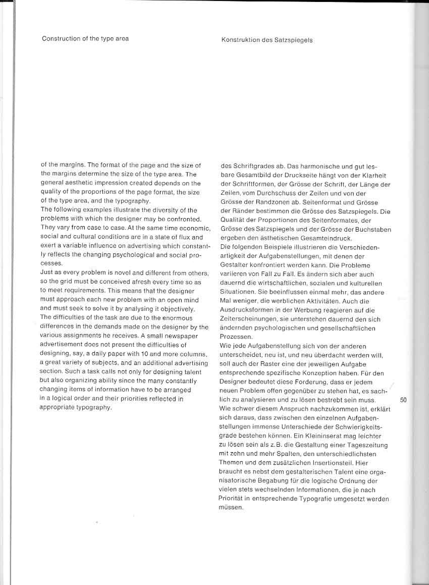
版心区域的构建：引言
版心（Satzspiegel/Type Area）的构建是印刷品设计中的核心步骤。页面格式和页边距的大小决定了版心区域的尺寸。页面的整体美学印象取决于页面格式、版心区域大小和排版质量之间的比例关系。
以下示例说明了设计师可能面临的问题的多样性。这些问题因情况而异。同时，经济、社会和文化条件也在不断变化，对广告活动产生不同程度的影响。广告中的表达形式也在不断反映着变化中的心理和社会过程。
正如每个问题都与其他问题不同，都是新颖的、需要重新思考的，网格也应该为每个任务提供一个特定的概念。对设计师来说，这一要求意味着他必须以开放的心态面对每一个新问题，客观地分析它，并努力解决它。任务的难度差异巨大——从设计一则小报纸广告，到设计一份拥有10栏或更多栏位、主题多样、还带有广告版面的日报。后者不仅需要设计才华，还需要组织能力，以便将大量不断变化的信息按逻辑顺序排列，并根据优先级转化为适当的排版。
原文参考 (OCR)
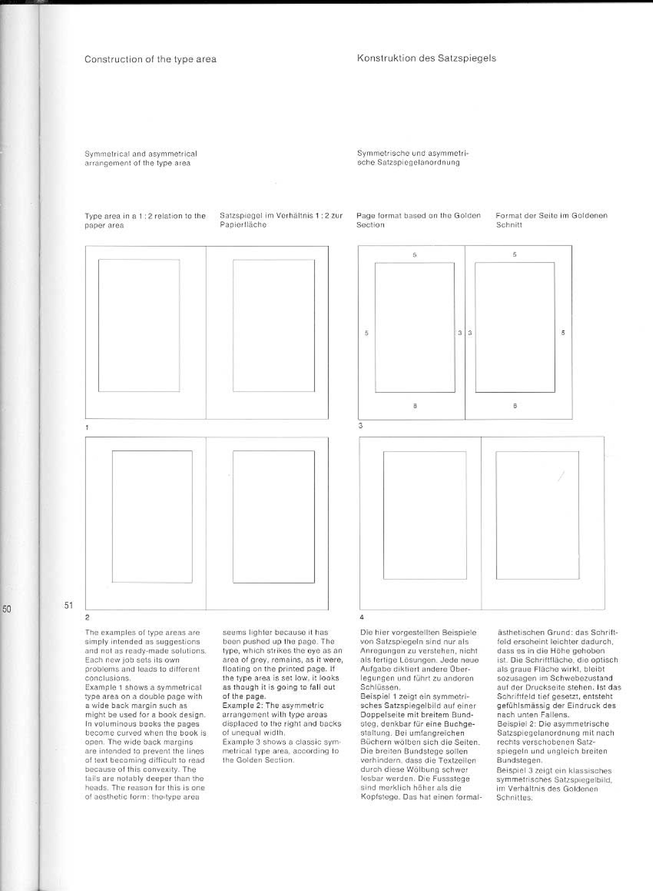
版心区域的构建：对称与非对称布局示例
以下三个示例仅作为建议，而非现成的解决方案。示例1展示了一个双页上的对称版心区域，书脊侧（内边距）较宽——这在书籍设计中是必要的，因为宽大的内边距可以防止页面弯曲时文字难以阅读。下边距比上边距更深，这是出于美学原因：版心区域看起来更轻盈，仿佛漂浮在页面上。
示例2展示了一种非对称布局，版心区域向右偏移，内边距宽度不相等。示例3展示了根据黄金分割的经典对称版心区域。这些示例让设计师了解他可能面临的多种问题类型，以及根据他的任务目标，版心区域可以如何呈现。
原文参考 (OCR)
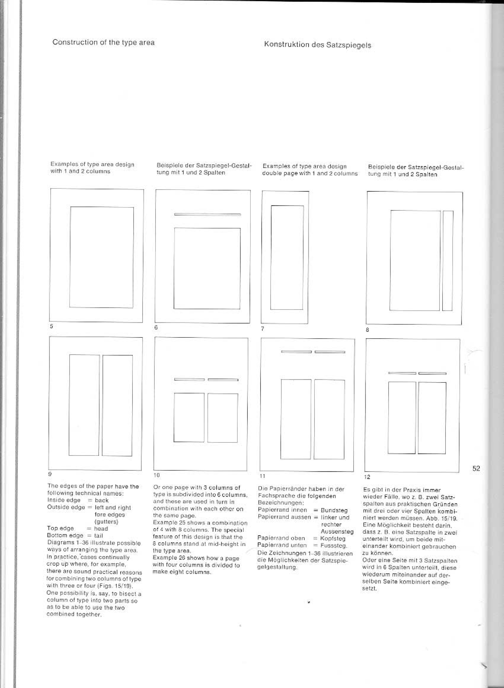
版心区域的构建：1栏与2栏设计
纸张边缘的技术术语：内侧边缘=书脊（订口），外侧边缘=左/右切口边，顶部边缘=天头，底部边缘=地脚。图表1-36说明了可能的排版方式。
实践中会出现两栏与三栏或四栏结合的情况。一种可能性是将一栏等分为两部分，以便它们可以组合使用。或者，一个拥有2栏的页面可以细分为6栏，用于组合使用。示例25展示了4栏与8栏的组合，其中8栏位于页面中间高度。示例26展示了一个四栏页面被划分为八栏。这些示例展示了栏的组合如何为设计师提供灵活性和多样性，同时保持整体结构的一致性。
原文参考 (OCR)
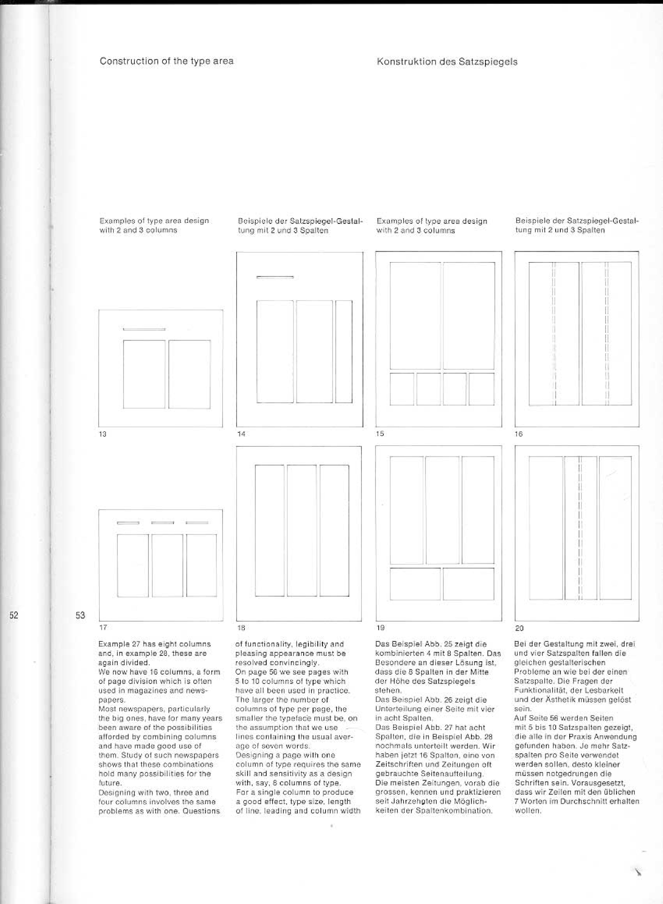
版心区域的构建：2栏与3栏设计
示例27有八栏，在示例28中这些栏进一步被细分为16栏——这种形式常用于杂志和报纸。大多数报纸，特别是大型报纸，早已意识到栏的组合可能性。设计两栏、三栏或四栏涉及与单栏相同的问题：功能性、可读性和令人愉悦的外观必须令人信服地解决。
在第56页，展示了2到10栏的页面。栏数越多，字体必须越小，假设每行包含通常的平均七个单词。设计师在确定栏宽时必须牢记：栏宽必须与字体大小成比例，过长的栏会使眼睛疲劳，过短的栏会干扰阅读流畅性。
原文参考 (OCR)
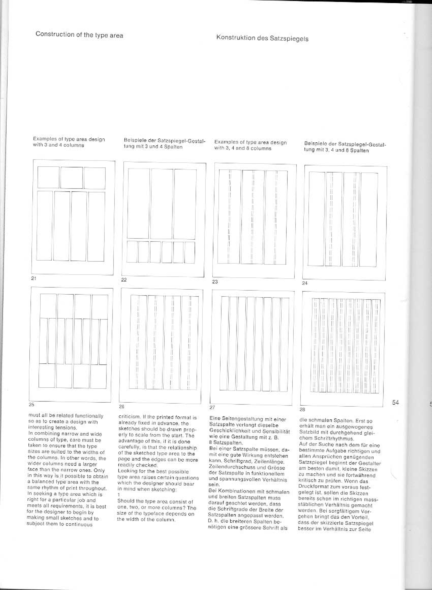
版心区域的构建：2栏与4栏设计
设计一个单栏页面需要与设计八栏页面相同的技巧和敏感性。对于单栏，字体大小、行长、行距和栏宽都必须功能性地相互关联，以创造有趣的张力。
当组合窄栏和宽栏时，必须注意字体大小要适合栏宽——宽栏需要更大的字体。只有这样，才能实现具有相同印刷节奏的平衡版心区域。设计师应该从绘制按比例缩小的草图开始，不断对其进行批判性审视，以便检查版心区域与页面及其边缘的关系。在草图中，设计师可以快速评估不同比例的效果，而不必在最终尺寸上犯错误。
原文参考 (OCR)
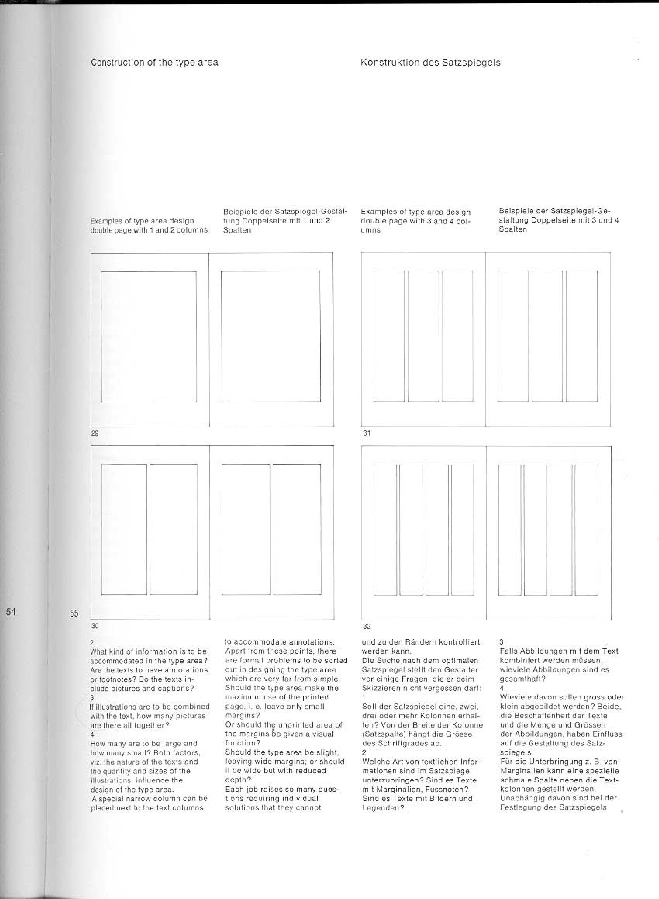
版心区域的构建：设计考量
设计师在绘制草图时必须问自己以下关键问题：（1）版心区域应该由一栏、两栏还是更多栏组成？字体大小取决于栏宽。（2）需要容纳什么样的信息？是否有注释、脚注、图片和说明文字？（3）如果插图与文字结合，总共有多少张图片？有多少大图和小图？
文本的性质和插图的数量与大小都会影响版心区域的设计。可以在文本栏旁边放置一个特殊的窄栏，用于注释。形式问题也会出现：版心区域应该利用最大页面空间并带有小边距吗？还是未印刷的边距应该具有视觉功能？版心区域应该较小并带有宽边距，还是较宽但深度减小？所有这些决定都取决于出版物的性质、目的和目标受众。
原文参考 (OCR)
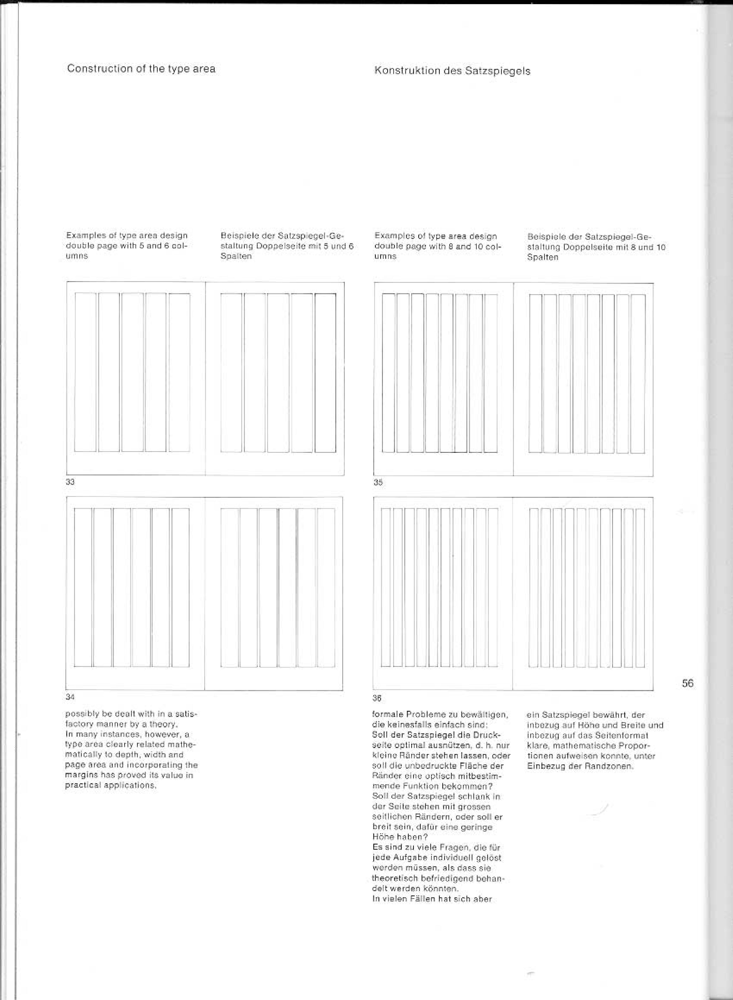
网格的构建
构建网格是一个系统性的过程，需要仔细考虑多个因素。首先，确定版心区域的大小和位置。然后，根据文本类型和数量，将版心区域划分为栏。
接下来，将版心区域划分为行。行的数量取决于字体大小和行距。通常，行数应能被进一步划分为更小的单元。
栏和行的交叉形成模块。模块是网格的基本构建块，可以组合成更大的区域来容纳文本和图像。
原文参考 (OCR)
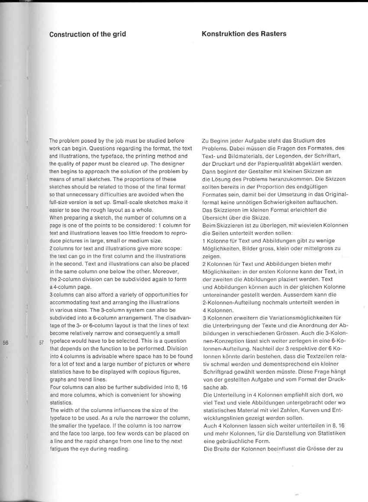
网格的构建（续）
构建网格时，以下数学考虑至关重要：
- 栏数——应能被进一步划分（如2、3、4、6、8、12）
- 栏间距——栏之间的空间，通常为1到2个行距
- 行数——应能被进一步划分
- 模块——栏和行交叉形成的独立单元
- 空间区——模块之间的水平间距
一个好的网格允许灵活地组合模块，同时保持整体的一致性。
原文参考 (OCR)
网格的构建（续）
在构建网格时，从版心区域的尺寸开始。首先确定栏数，然后计算栏宽。栏宽等于（版心宽度 - 所有栏间距之和）除以栏数。接下来，确定行数。行数取决于字体大小和所需行距。版心高度除以行距得到行数。
为了获得最大的灵活性，行数应能被进一步划分为更小的单元。例如，如果版心区域有60行，可以划分为2×30、3×20、4×15、5×12、6×10等。
原文参考 (OCR)
本页为"正文与展示字体"章节的插图/示例页面。
原文参考 (OCR)
网格的构建：字体与网格字段的整合
如果需要另一种字体来解决问题，原则上必须再次经历相同的思考过程。插图、表格、统计数据等被当作网格字段来处理，即按照网格字段的大小来设计。
多个网格字段可以组合成更大的字段，在这种情况下，字段的上边缘和下边缘必须与文本行对齐。在行和网格字段相互调整之后，必须判断版心区域是否与页面尺寸形成了令人满意且美观的比例关系。为此，需要检查边距的比例、它们之间的相互关系以及它们与版心区域的关系。
如果结果不令人满意，必须从头开始。这项工作可能耗时，但值得付出，因为出版物的最终印象可能取决于它。
原文参考 (OCR)
网格的构建：逐步构建方法（草图1-4）
一种有用的方法：（图1）设计师以1:1的比例绘制版心区域，其深度和宽度在功能和美学上看起来最佳。（图2）一旦版心区域确定，设计师将其划分为2个、3个或更多文本栏，栏之间由间距隔开。（图3）然后将文本栏水平划分为2个、3个或更多字段。
（图4）设计师必须决定使用什么字体大小和行距。如果10点字体配合3点行距能确保可读性，他需要检查每个字段能容纳多少行。在大多数情况下，字段深度必须调整为特定的文本行数。这是一个反复试验的过程，需要耐心和对细节的关注。
原文参考 (OCR)
网格的构建：分隔网格字段（草图5-8）
（图5/6）为图片、绘图、照片等规划的字段最初是上下叠放的，仅由一条线分隔。它们必须被分隔开，以免相互接触。图片之间用一个或多个空行隔开。对于两个字段，用一个空行分隔；对于三个字段，用两个空行；对于四个字段，用三个空行，依此类推。
（图7/8）图7中带有6个字段的网格与具有26行的版心区域相匹配。在图8中，网格字段的上下边界线各自与一行文本对齐。这种对齐是网格系统精确性的关键——它确保了文本和图像之间的视觉和谐，创造出专业、统一的页面外观。
原文参考 (OCR)
网格的构建：带说明文字的图片网格（草图9-10）
（图9/10）如果图片网格仅用于放置带有说明文字的图片，问题相对容易。垂直间距必须大于水平间距，因为说明文字必须放在图片下方。说明文字也可以放在页面底部或任何方便的位置。
如果图片网格必须与版心区域匹配，可能涉及多种字体大小，任务就变得相当困难。如果图片网格在所有点上与版心区域重合，图片的上下边缘将始终与文本行对齐。无论图片大小如何，每张图片的边缘都将精确地与相邻的文本行吻合。图片的深度必须根据行数调整，图片的宽度必须与文本栏的宽度匹配。
原文参考 (OCR)
网格的构建：53行版心区域匹配18字段网格
必须注意行长要正常，并与所选字体大小相符——每行大约7个单词。同时，行的宽度应该适合插图。在确定图片网格时，必须同时考虑文本栏和图片。根据说明文字的大小，图片之间的垂直间距将是1、2、3个或更多空行。只使用完整的空行（从不使用半行），否则一栏的深度将与另一栏不一致。
（图1/2）图1中的文本栏与一个18字段的网格相匹配。文本采用左对齐（不齐行）排版，单词间距相等，单词分割较少。这种排版方式在网格系统中特别有效，因为它避免了齐行排版中出现的参差不齐的单词间距，同时保持了每行独特的韵律。
原文参考 (OCR)
网格的构建：18字段网格与43行文本的详细示例
（图3/4）包围网格字段的水平线被延伸到文本栏之外，以显示文本行必须如何与字段对齐。图片的上边缘应与大写字母的顶部在同一水平线上。图片的下边缘应与小写字母的下伸部在同一水平线上。
带有4栏的版心区域采用10点中等无衬线字体和3点行距设计，左对齐排版。栏长与字体大小之间的比例令人愉悦。行距足够大，阅读舒适。边距大小不同，为设计带来张力。红线标记了共有18个字段的图片网格。网格字段之间始终有1行行距，用作空白空间或说明文字的空间。这个例子完美地展示了当所有元素都被仔细计算时，网格系统能够产生的精确性和优雅感。
原文参考 (OCR)
网格的构建：网格系统中的多种字号（7点、10点、20点）
（图5）插图展示了4栏中不同大小的字体，以及带有水平线的第四栏。第1栏：7点字体，1点行距。第2栏：10点字体，2点行距。第3栏：20点字体，4点行距。红色水平线将行分为组：7点组有3行，10点组有2行，20点组有1行。
红线之间相距24点，对应：3行7点字体（3×7+3×1=24点），或2行10点字体（2×10+2×2=24点），或1行20点字体（20+4=24点）。如果放置一张与文本栏宽度相同的图片，从第一条红线跨越到第七条红线，那么图片的上下边缘都将与文本行对齐。如果在下方放置第二张相同大小的图片，其间距对应于一条红线到下一条红线的距离，其边缘也将与文本行对齐。这种数学精确性正是网格系统的核心优势。
原文参考 (OCR)
网格的构建：将版心区域划分为等大网格字段
（图6/7）一个59行的版心区域可以划分为9个5行字段（字段间有1个空行），或者6个6行字段（字段间有1个空行）。字段之间的空行用于将插图分开，如果需要，也可以为说明文字或符号提供空间。
行数决定了字段细分的数量。例如，一个44行的版心区域可以用5种不同的方式划分：（a）分成12个4行字段，中间有1个空行；（b）分成10个5行字段；（c）分成6个9行字段；（d）分成5个11行字段；（e）分成4个14行字段——所有划分都在字段之间有1个空行。这种灵活性是网格系统强大之处：它允许设计师根据内容需求选择最合适的网格划分方式。
原文参考 (OCR)
网格的构建：36字段网格的版心区域
（图9）图1-3中的网格示例是用2个文本/图片栏设计的。这里展示的网格通过将原来的2栏等分，扩展为4栏。这个网格可以同时用于2栏和4栏布局。粗红线标记了示例10-13中文本和插图可用的空间，而顶部的空白区域用于展示字体。页码位于第2栏文本下方和开头处，带有2行行距。
这个例子展示了网格的灵活性——同一个网格可以适应不同的栏数，使设计师能够根据内容需求在2栏和4栏布局之间切换，而无需改变基础网格结构。
原文参考 (OCR)
网格的构建：标题与文本在网格中的两种字号
图10：展示字体和两个文本栏被放置在网格网络中。标题和文本栏之间的空白空间通过创造休息区的印象来强调标题的重要性。这种空白的使用是网格设计中的一个关键原则——它不仅仅是没有内容的空间，而是一个积极的、功能性的设计元素。
图11：图片上下叠放或并排放置，中间没有任何东西分隔，只有在设计师希望个别插图在与其他插图的互动中创造某种氛围，而不是每张图片都独立突出时才是有道理的。这种处理方式在需要营造整体氛围的摄影集或艺术书籍中特别有效。
原文参考 (OCR)
网格的构建：照片、文本和说明文字在网格中
图12：图片和说明文字与网格匹配。通过图片之间以及图片与文本之间的大小对比，可以创造出有趣的张力。说明文字在垂直方向上与插图对齐。对于这种页面设计，高质量的大幅插图是必要的补充；图片必须主导未印刷的白色空间，以便在视觉上激活它，否则页面会显得乏味和沉闷。
图13：在网格内，非常简单的解决方案可能是正确的，这取决于问题。首要关注的是以最简单的方式展示网格与图片和文本的关系。大幅图片与较小的竖版、方形和横版图片的简单组合，可能足以营造生动的印象，前提是文本和图片本身具有生动性和信息性。
原文参考 (OCR)
含8个网格字段的图文区域
以下页面展示了A4格式（29.7×21厘米）下含8、20和32个网格字段的图文区域示例，比例为1:1。尺寸以西塞罗和点（用于传统铅字排版）以及公制度量（用于照相排版）给出。
8字段网格布局经常用于广告传单和宣传册。8种不同尺寸的图片组合通常足以解决简单的问题。通过想象力，可以创造出充满活力和对比丰富的布局，特别是在白色空间被敏锐地用作设计元素时。8字段网格可以细分为16个字段。8和16网格字段的组合为设计师提供了广泛的可能性。还应注意：版心区域和图片网格的精确尺寸对印刷商生产准确的工作至关重要。
原文参考 (OCR)
含8个网格字段的图文区域：示例
本页展示了8字段网格在实践中的应用示例。通过图片和文本在8字段网格中的不同排列方式，设计师可以创造出多样的视觉效果。8字段网格虽然简单，但通过巧妙运用，可以产生丰富的变化。空白空间的使用、图片大小的对比以及文本位置的精心安排，都能使简单的8字段网格焕发出活力。
原文参考 (OCR)
含8个网格字段的图文区域：更多示例
本页继续展示了8字段网格的更多应用可能性。当设计师掌握了8字段网格的基本原理后，可以进一步探索其变化。通过将8字段细分为16字段，设计师可以获得更大的灵活性。这些示例展示了即使是相对简单的网格结构，也能通过创造性的运用产生专业而引人注目的设计效果。
原文参考 (OCR)
网格的构建：应用示例
本页展示了网格构建在实践中的应用。通过将理论原则转化为具体的设计方案，这些示例展示了网格系统如何能够在各种不同的设计场景中发挥作用。无论是在简单的单页广告还是在复杂的多页出版物中，网格系统都提供了一种可靠的、可复制的方法来组织视觉元素。
设计师可以从这些示例中学习如何将网格原则应用于自己的工作中，以及如何根据具体需求调整网格的细密度和结构。
原文参考 (OCR)
网格的构建：应用示例
本页展示了网格构建在实践中的应用。通过将理论原则转化为具体的设计方案，这些示例展示了网格系统如何能够在各种不同的设计场景中发挥作用。无论是在简单的单页广告还是在复杂的多页出版物中，网格系统都提供了一种可靠的、可复制的方法来组织视觉元素。
设计师可以从这些示例中学习如何将网格原则应用于自己的工作中，以及如何根据具体需求调整网格的细密度和结构。
原文参考 (OCR)
网格的构建：应用示例
本页展示了网格构建在实践中的应用。通过将理论原则转化为具体的设计方案，这些示例展示了网格系统如何能够在各种不同的设计场景中发挥作用。无论是在简单的单页广告还是在复杂的多页出版物中，网格系统都提供了一种可靠的、可复制的方法来组织视觉元素。
设计师可以从这些示例中学习如何将网格原则应用于自己的工作中，以及如何根据具体需求调整网格的细密度和结构。
原文参考 (OCR)
网格的构建：应用示例
本页展示了网格构建在实践中的应用。通过将理论原则转化为具体的设计方案，这些示例展示了网格系统如何能够在各种不同的设计场景中发挥作用。无论是在简单的单页广告还是在复杂的多页出版物中，网格系统都提供了一种可靠的、可复制的方法来组织视觉元素。
设计师可以从这些示例中学习如何将网格原则应用于自己的工作中，以及如何根据具体需求调整网格的细密度和结构。
原文参考 (OCR)
网格的构建：应用示例
本页展示了网格构建在实践中的应用。通过将理论原则转化为具体的设计方案，这些示例展示了网格系统如何能够在各种不同的设计场景中发挥作用。无论是在简单的单页广告还是在复杂的多页出版物中，网格系统都提供了一种可靠的、可复制的方法来组织视觉元素。
设计师可以从这些示例中学习如何将网格原则应用于自己的工作中，以及如何根据具体需求调整网格的细密度和结构。
原文参考 (OCR)
网格的构建：应用示例
本页展示了网格构建在实践中的应用。通过将理论原则转化为具体的设计方案，这些示例展示了网格系统如何能够在各种不同的设计场景中发挥作用。无论是在简单的单页广告还是在复杂的多页出版物中，网格系统都提供了一种可靠的、可复制的方法来组织视觉元素。
设计师可以从这些示例中学习如何将网格原则应用于自己的工作中，以及如何根据具体需求调整网格的细密度和结构。
原文参考 (OCR)
网格的构建：高级示例
本页展示了网格构建的高级应用。这些示例涉及更复杂的布局需求，包括多栏文本、不同大小的图片、以及多种层次的标题和说明文字。通过这些示例，设计师可以看到网格系统如何在处理复杂内容时保持清晰性和一致性。
原文参考 (OCR)
网格的构建：高级示例
本页展示了网格构建的高级应用。这些示例涉及更复杂的布局需求，包括多栏文本、不同大小的图片、以及多种层次的标题和说明文字。通过这些示例，设计师可以看到网格系统如何在处理复杂内容时保持清晰性和一致性。
原文参考 (OCR)
网格的构建：高级示例
本页展示了网格构建的高级应用。这些示例涉及更复杂的布局需求，包括多栏文本、不同大小的图片、以及多种层次的标题和说明文字。通过这些示例，设计师可以看到网格系统如何在处理复杂内容时保持清晰性和一致性。
原文参考 (OCR)
网格的构建：高级示例
本页展示了网格构建的高级应用。这些示例涉及更复杂的布局需求，包括多栏文本、不同大小的图片、以及多种层次的标题和说明文字。通过这些示例，设计师可以看到网格系统如何在处理复杂内容时保持清晰性和一致性。
原文参考 (OCR)
含20个网格字段的图文区域：更多示例
这里展示的4个示例说明了设计师可以多种不同方式使用20字段网格。图1：在4栏网格中，右侧有3栏文本；只有插图跨越了4栏。这给读者一种视觉印象，即左侧栏中插图上下的空白空间是构图中的设计元素。
第二个示例用非常简单的手段设计；出色的效果很大程度上归功于图片的时效性和文本内容。各种格式的插图和文本的组合，加上所有大小和粗细的字体选择（包括正体和斜体），为设计师提供了施展才华的广阔空间。这些示例证明了网格系统不会限制创造力——相反，它提供了一个框架，使创造力能够更加有效地发挥。
原文参考 (OCR)
含20个网格字段的图文区域：额外示例
更多示例被讨论。第一：裁剪成字母形状的照片是一种极少使用的极端设计形式。"F"的双重功能（既代表建筑又代表字符"F"）通常会削弱期望的效果；眼睛要么更突出地看到建筑而非字符，要么先看到字母，留下模糊的印象。
第二：图片和排版作为元素被非常精确地安排并相互调整。管子的纤细形状与文本栏对齐，而大型螺旋弹簧形成了强烈的对比。这是一个将摄影和文本元素与构图融为一体的解决方案。此处未讨论的另一个设计资源是色彩——在摄影和排版中使用色彩为创意活动增添了额外的维度。
原文参考 (OCR)
含20个网格字段的图文区域：示例
本页展示了20字段网格在实践中的更多应用。20字段网格比8字段网格提供了更大的灵活性，允许更细致的图片和文本排列。设计师可以根据内容需求，将多个小字段组合成更大的单元，创造出多样化的布局。20字段网格特别适合需要容纳多种不同尺寸图片的出版物，如杂志、目录和宣传册。
原文参考 (OCR)
含20个网格字段的图文区域：更多变化
本页继续展示了20字段网格的应用可能性。通过将20字段网格进一步细分或组合，设计师可以获得几乎无限的布局变化。关键是在保持网格结构一致性的同时，通过图片大小、文本位置和空白空间的巧妙变化来创造视觉兴趣和层次感。
原文参考 (OCR)
含20个网格字段的图文区域：布局示例
本页展示了基于20字段网格的完整页面布局。文本栏、图片和说明文字都精确地与网格对齐。页面的整体效果展示了网格系统如何能够创造出既专业又引人入胜的视觉传达作品。每个元素的位置都经过精心计算，以确保视觉和谐和信息层次清晰。
原文参考 (OCR)
含20个网格字段的图文区域：组合示例
本页展示了20字段网格中图片和文本的组合方式。大幅图片与小幅图片之间的对比，文本栏与图片之间的互动，以及空白空间的策略性使用，都展示了网格系统在实践中的强大功能。设计师通过学习这些示例，可以更好地理解如何在自己的工作中应用网格原则。
原文参考 (OCR)
含32个网格字段的图文区域：不同深度的格式
这种多字段网格特别适用于需要极大设计灵活性的情况。需要通过许多小插图向读者传达信息的书籍和目录、期刊和杂志，需要细密网格的网格。字段数量越多，找到正确的网格并应用它的难度就越大。可能需要大量时间来决定使用哪种字体以及所选字号适合什么行距。
所有图片字段必须与以各种字号设置的文本行对齐。本页和后续页面是对可用图片尺寸数量的令人印象深刻的证明。32字段网格是本书中最复杂的网格之一，它要求设计师具有高度的自律性和精确性，但也提供了最大的灵活性。
原文参考 (OCR)
含32个网格字段的图文区域：6栏布局
32字段网格在需要在有限空间内容纳大量非常小的插图时可能具有实际帮助。这种网格形式提供了32个字段，可以通过将最小的网格单元组合成更大的单元来变化文本和插图的尺寸。相对狭窄的页面结构使得能够容纳不同类型的信息。
对设计师的要求非常高；他最好准备一个包含文本和图片信息优先级的粗略草稿。一个困难的障碍是需要设计一个贯穿整个作品的可识别的秩序系统，让特征性元素在出现时能够被识别，同时整体设计保持功能性、生动性和令人满意。设计师面临的风险在于对使用不同大小的网格字段缺乏足够的自律性。
原文参考 (OCR)
含32个网格字段的图文区域：示例1
本页展示了32字段网格在实践中的第一个应用示例。通过细密的网格划分，设计师可以精确地控制每个元素的位置和大小。32字段网格特别适合复杂的出版物，如包含大量图片、图表和文本的杂志或目录。这种网格的细密程度使得即使是微小的设计调整也能在保持整体一致性的同时实现。
原文参考 (OCR)
含32个网格字段的图文区域：示例2
本页展示了32字段网格的另一个应用示例。32字段网格的灵活性使得设计师能够将小字段组合成各种大小的单元，以适应不同类型的内容。从占据单个字段的小图标到跨越多个字段的大幅照片，32字段网格都能完美地容纳。
原文参考 (OCR)
含32个网格字段的图文区域：示例3
本页继续展示了32字段网格的应用。这种网格的关键优势在于其细密的划分：设计师可以将看似无限的组合方式用于文本和图片。但这也要求设计师具有高度的自律性，以确保设计不会变得混乱。秩序感和清晰性是在使用32字段网格时必须始终坚持的原则。
原文参考 (OCR)
含32个网格字段的图文区域：示例4
本页展示了32字段网格的最后几个示例。通过系统化的方法，32字段网格能够产生令人惊叹的设计效果。每个元素——无论是文本、图片还是空白空间——都与其他元素和谐共存，创造出一个统一而富有活力的视觉整体。这些示例证明了网格系统即使在最复杂的设计任务中也能保持其有效性和优雅性。
原文参考 (OCR)
网格系统中的插图
插图、绘图、统计数据、表格等与照片一样，按照网格字段进行调整。对于没有矩形边界的裁剪插图，一个好主意是将它们放置在页面上，使背景对应一个网格字段。通常建议使用浅色半色调背景，这样插图既能保持自身的活力，又能更明确地与网格布局联系起来。
插图的尺寸和形状并不重要；将插图融入网格模式更加突出了设计师组织其工作的意愿。如果印刷是彩色的，在可能的情况下，可以用纯色区域代替半色调背景。这种方法使插图成为网格系统的有机组成部分，而不是与网格格格不入的独立元素。
原文参考 (OCR)
网格系统中的插图：裁剪与封闭插图
放置在文本区域中的裁剪插图有在空间中变得视觉上不确定的风险。为了给它稳定性，可以将其放在灰色或彩色区域上，其大小必须适应网格（或如果没有网格，则适应行）。这样，灰色或彩色区域以及随附的插图成为整体设计的有序组成部分（图1）。
封闭几何形状内的插图通常可以更容易地以美学上令人满意的方式融入文本模式。插图的宽度与文本栏相同，因此与文本在形式上融为一体。如果插图需要看起来比实际更紧凑，可以为其衬以灰色调，将线条结构聚集在一起形成平面（图2）。如果插图需要增加视觉强调，可以为其衬以彩色区域。
原文参考 (OCR)
网格系统中的摄影：示例
本页展示了摄影在网格系统中的应用。照片被精确地按照网格字段的大小和位置放置，与文本和说明文字形成和谐的视觉效果。摄影在网格系统中扮演着关键角色——它不仅是信息的载体，还是激活页面空间、创造视觉节奏的重要设计元素。通过将摄影融入网格系统，设计师能够确保照片与排版元素之间的精确对齐和比例关系。
原文参考 (OCR)
网格系统中的摄影：示例
本页展示了摄影在网格系统中的应用。照片被精确地按照网格字段的大小和位置放置，与文本和说明文字形成和谐的视觉效果。摄影在网格系统中扮演着关键角色——它不仅是信息的载体，还是激活页面空间、创造视觉节奏的重要设计元素。通过将摄影融入网格系统，设计师能够确保照片与排版元素之间的精确对齐和比例关系。
原文参考 (OCR)
网格系统中的摄影：示例
本页展示了摄影在网格系统中的应用。照片被精确地按照网格字段的大小和位置放置，与文本和说明文字形成和谐的视觉效果。摄影在网格系统中扮演着关键角色——它不仅是信息的载体，还是激活页面空间、创造视觉节奏的重要设计元素。通过将摄影融入网格系统，设计师能够确保照片与排版元素之间的精确对齐和比例关系。
原文参考 (OCR)
网格系统中的摄影：示例
本页展示了摄影在网格系统中的应用。照片被精确地按照网格字段的大小和位置放置，与文本和说明文字形成和谐的视觉效果。摄影在网格系统中扮演着关键角色——它不仅是信息的载体，还是激活页面空间、创造视觉节奏的重要设计元素。通过将摄影融入网格系统，设计师能够确保照片与排版元素之间的精确对齐和比例关系。
原文参考 (OCR)
实践案例：书籍《平面设计师的设计问题》
该书的第三版于1968年出版。它采用4栏文本和8部分图片网格设计。在图片网格的上方和下方，分别留出3行和8行用于主题标题和说明文字。文本和说明文字使用两种字号。文本行与说明文字行一样，与插图对齐。书中710张插图部分为彩色，部分为黑白。格式：22.5×28.5厘米，横版。页数：186页。
原文参考 (OCR)
实践案例：Ciba Milan月刊"Rote C"
Ciba Milan的杂志"Rote C"基于一个8字段的网格。文本和副标题使用相同的字号。副标题通过在前后各放置一个空行而与文本区分开来。分隔空间由完整的空行组成，而非半行或四分之一行，因此第一栏文本的行与第二栏的行对齐。
标题的大字符与文本中字母的大小形成鲜明的对比。文本和图片的布局处理得很大气。通过使用1/8页、1/4页、1/2页和整页图片，形成了有趣的图案。所有标题都放在栏的顶部，当文本较短时，底部会出现或多或少的白色区域，进一步强调了图片组织的宽敞感。
原文参考 (OCR)
网格系统中的摄影：海报设计
本页展示了摄影在网格系统中的更多应用，特别是在海报设计领域。大幅照片与网格系统结合，能够产生强烈的视觉冲击力。照片的构图、裁切和位置都与网格的划分紧密配合，确保每个视觉元素都精确地服务于整体的传达目标。
原文参考 (OCR)
网格系统中的摄影：宣传册示例
本页展示了摄影在宣传册设计中的网格应用。通过将照片按照网格系统排列，不同尺寸和比例的照片能够和谐共存，创造出既有节奏感又保持统一性的页面布局。网格系统确保了照片与文本之间的精确对齐，增强了设计的专业感和可信度。
原文参考 (OCR)
网格系统中的摄影：目录设计
本页展示了摄影在产品目录中的网格应用。产品照片通过网格系统被组织成清晰、易于浏览的布局。不同产品的照片大小可以根据其重要性而变化，但所有照片都严格遵循网格的边界，确保整体设计的一致性和秩序感。
原文参考 (OCR)
网格系统中的摄影：杂志设计
本页展示了摄影在杂志设计中的网格应用。杂志需要容纳各种不同类型的内容——新闻报道、特写文章、评论等——而网格系统能够为这些多样化的内容提供一个统一的结构框架。摄影在杂志网格中扮演着吸引读者注意力、引导阅读流程和营造氛围的关键角色。
原文参考 (OCR)
实践案例：海报"musica viva"
"musica viva"海报建立在一个宽47.5字段、深4字段的网格上。两个词"musica viva"被排列成十字形，"musica"的字母以不规则的间隔设置，从而产生了一种节奏感。小字号的节目单行与"musica viva"的字母对齐。通过这种方式，创造出了一种严谨而优雅的建筑感。格式：128×90.5厘米，竖版。色彩：蓝-绿-白。
这张海报是网格系统在大型格式中应用的杰出范例，展示了网格如何能够在保持严格秩序的同时，创造出富有表现力和艺术性的设计作品。
原文参考 (OCR)
实践案例：期刊"Oppositions"
期刊"Oppositions"基于一个16字段的网格构建。在特殊情况下，中间行字段会被细分。文本栏从图片水平线开始，在图片基线上结束。文本和说明文字使用两种字号；只有标题是半粗体，说明文字是斜体。
该期刊展示了建筑照片、平面图和立面细节、轴测投影，以及用于比较的过去世纪的建筑图片。所采用的网格似乎以极其令人满意的方式满足了要求。插图是黑白的。格式：25×21厘米，竖版。页数：120页。这个案例展示了网格系统如何能够为建筑和设计类出版物提供理想的框架，使复杂的视觉材料能够以清晰、有条理的方式呈现。
原文参考 (OCR)
网格系统中的插图：更多示例
本页展示了插图在网格系统中的更多应用示例。插图——无论是技术绘图、图表还是艺术插图——都可以通过网格系统与文本和其他视觉元素精确地对齐。网格系统为插图提供了稳定的框架，同时允许插图在大小和位置上具有灵活性。这种灵活性使得设计师能够根据插图的内容和重要性来决定其视觉权重。
原文参考 (OCR)
网格系统中的插图：书籍设计
本页展示了插图在书籍设计中的网格应用。在书籍中，插图通常与文本紧密配合，网格系统确保了文本和插图之间的精确对齐。通过将插图和文本整合到同一个网格中，设计师能够创造出既具有学术严谨性又具有视觉吸引力的页面布局。这种方法特别适用于教科书、艺术书籍和科学出版物。
原文参考 (OCR)
实践案例：宣传册"慕尼黑，1972年奥运会之城"
宣传册"慕尼黑，1972年奥运会之城"采用16和20部分网格设计。文本和图片被精确对齐。内页的文本使用单一字号。所有图片均为四色印刷。图片的排列成功地产生了节奏感。图片之间的空白空间增强了这种效果。
16部分网格与20部分网格结合使用，根据图片的不同在某些页面上使用。一个示例展示了三张方形图片在16字段网格上上下排列，而两张大幅照片和左下方较小的照片则适合20部分网格。两种网格的组合需要设计师的技巧和敏感性。格式：29.7×28厘米，竖版。页数：34页。
原文参考 (OCR)
实践案例：杉浦康平的日本书籍"Design"
自从网格系统在六十年代被认识以来，一些日本设计师也尝试在他们的设计中使用网格。日本文字，像中文一样，是基于方形构建的，因此非常适合网格布局。在这个例子中，西方名称和阿拉伯字母的说明文字必须同时出现在日文文本中。
设计师将这些文本部分放在两段日文文本之间。这种布局形式在全书中被一致使用。插图是黑白的。具体案例是特刊："数学美学"，1976年11月，朝日出版社，东京。格式：25.3×15.2厘米，竖版。页数：248页。这个案例特别有趣，因为它展示了网格系统如何能够跨越文化和书写系统的界限，为东西方排版提供统一的解决方案。
原文参考 (OCR)
网格系统中的纯色：企业宣传册
本页展示了纯色在网格系统中的应用。纯色可以作为背景、强调色或分隔元素，为设计增添深度和层次感。在网格系统中，纯色区域被精确地定义为网格字段的大小，确保它们与文本和图片完美对齐。纯色的策略性使用可以引导读者的注意力，强调重要信息，并在页面之间创造视觉连续性。
原文参考 (OCR)
网格系统中的纯色：展览目录
本页展示了纯色在展览目录中的网格应用。纯色不仅仅是一种装饰元素——它在网格系统中扮演着功能性的角色。通过为特定区域应用纯色，设计师可以区分不同类型的信息，创造视觉层次，并增强页面的整体结构感。在网格系统中使用纯色时，关键是保持一致性：相同类型的信息应始终使用相同的颜色，以确保读者能够直观地理解信息的结构。
原文参考 (OCR)
实践案例：IBM意大利宣传册"La macchina"
IBM意大利的宣传册"La macchina"采用了一个18字段的网格设计。设计师运用技巧和想象力，在每一页上创造出文本、图片说明和插图的变化多样的布局。
标题、正文和图片说明使用相同的字体大小，但图片说明以红色印刷，从而与正文清晰区分。图片大多为黑白，部分为黑红双色。格式：21×21厘米，共70页。
原文参考 (OCR)
实践案例：瑞士艺术地形学目录系列
该系列目录由瑞士艺术科学研究所出版，格式为23×27厘米，单色（黑色）印刷，封面为双色（黑色加一种变换色）。
该系列的网格由18个字段组成，分布在3栏中——两栏宽、一栏窄。正文放在宽栏中，注释和图片说明放在窄栏中。插图可以占据任意网格字段。瑞士艺术科学研究所多年来一直对其出版物、表格和展览采用统一的设计路线。
原文参考 (OCR)
实践案例：19世纪和20世纪艺术目录
该系列艺术科学著作使用相同的网格、字体和字号进行设计。封面设计也基于同一系统——在保持排版概念不变的同时，封面的颜色逐卷变化。
设计的一致性通过使用相同的格式、纸张质量、网格、字体和字号来实现。每个单卷的不可混淆性通过封面图像和颜色的差异来保证。这种统一性使该系列作品能够在读者中产生更大、更持久的印象。
原文参考 (OCR)
实践案例：Ralf Harder与Ernst Roch平面设计宣传册
这是一家平面设计工作室的广告宣传册。图片和说明被整合到一个20字段的网格中。前几页的介绍性文字排成两栏。
插图大小从1个网格字段到16个字段不等，部分为彩色，部分为黑白。格式：26.7×21厘米（竖版），胶印，共53页。
原文参考 (OCR)
实践案例：IBM美国年度报告
IBM年度报告采用21格网格设计，用于文本和图片部分。最顶部的网格字段比其他字段更高，以便将标题放在页面顶部，为长标题创造更多空间。
正文和图片说明使用四种字号排版。图片为四色印刷。格式：26.7×23厘米，共36页。
原文参考 (OCR)
实践案例：展览宣传折页
该折页有7个字段，网格基于将页面垂直划分为3个等大方块。文本行与照片对齐。正文和图片说明使用相同的字号，只有标题使用大4点的粗体字。
设计折页时，重要的是在图片和文本栏之间留出足够的间距，以免它们落入折痕中。两个或更多方块可以组合成更大的单元，创造更宽敞的设计。文本段落之间相隔一个空行。折页双面印刷，折叠七次后可以装入标准A5/6信封邮寄。色彩：黑白。格式：56×27厘米。
原文参考 (OCR)
实践案例：Pirelli集团宣传册
该宣传册采用24个正方形网格字段设计。图片有10种不同的尺寸，大小格式之间形成生动的对比。
文本栏的第一行和最后一行与页面顶部和底部的插图对齐。其余行并未专门与图片对齐。这个例子典型地说明了许多情况：为图片选择了精确的网格，但（除第一行和最后一行外）它对文本行没有约束力。正文使用两种字号。图片部分为彩色，部分为黑白。格式：29.7×28厘米（竖版），胶印。
原文参考 (OCR)
实践案例：荷兰期刊"fodar 24"
该博物馆期刊"fodar"采用48格网格设计。有趣的是，所有文本都是用Composer排版的。因此，网格模板通过网格字段中的点来指示需要遵守的按键次数，以确保网格正确。
格式：25×20厘米（竖版），共4页。
原文参考 (OCR)
实践案例：日内瓦"Pharmacie Principale"目录
该目录的照片排列采用49格网格设计，文本排成4栏。产品所叠加的背景字体在形状和大小上逐页变化。
照片为黑白，文本为红色印刷。格式：20.5×20.5厘米，共42页。
原文参考 (OCR)
实践案例：Swiss Lamps照明设备宣传册
54格网格和3栏布局使得技术数据和图纸的放置这一难题得到了令人满意的解决。大多数照片尺寸较大，而技术规格尺寸较小。正文使用两种字号。
插图以简短的篇幅讲述了照明的历史。封面采用多重曝光技术，展示了台灯臂在转动过程中的画面。格式：29.8×21厘米，四色印刷。
原文参考 (OCR)
实践案例：Rosenthal"Studio-Linie"目录
该目录采用60格网格设计。这种细密的网格划分允许在图片和文本组织方面有非常大的自由度，但要求设计师在运用资源时保持克制自律。
所有插图和文本都置于黑色背景上。这样图片的表現力得以增强。但另一方面，如果文本过长、排得过密，阅读会更困难。因此，反白文字应该像本例中那样简短，并使用相对宽松的行距。插图有黑白和彩色。格式：20×20厘米，共62页。
原文参考 (OCR)
实践案例：美国杂志"CCA Today"
该杂志需要一个65字段的网格来满足其多种功能需求。大幅图片与极小尺寸的图片交替出现。标题、正文和图片说明使用三种字号（中等和半粗体）。标题根据重要性以黑色或蓝色印刷。
一般来说，期刊需要细密的网格。文本和图片的内容不断变化，要求设计师具有高度的灵活性。但另一方面，65个网格字段提供的丰富机会也可能导致设计师忽视布局的清晰性和逻辑性。所有插图均为黑白印刷。格式：43.1×28厘米（竖版），共4页。
原文参考 (OCR)
实践案例：海报"新瑞士电影"
该海报采用72字段网格布局，黑白印刷。它是系列海报中的一张，该系列使用相同的排版设计，但图片排列模式各不相同。
图片之间的水平间距远大于垂直间距，因为它们需要为4行说明文字提供空间。边距区域保持较大，以便用尽可能大的黑色背景围绕摄影插图。海报尺寸为39.3×41.8厘米。
原文参考 (OCR)
企业形象中的网格系统
企业形象的构想必须为公司在处理内部和外部业务时使用的所有信息媒介进行规划。需要寻找一种基本理念，使得能够为所有相关问题找到一致、逻辑和功能性的解决方案，但不仅如此：一旦找到这种构想，它必须能够在多年的实践中成长为一个独特的、能够体现公司理念的项目。
一个特别的困难在于，这种构想还必须适用于未来才会出现的功能，因此必须具备极大的灵活性。网格规划必须同时处理字体和色彩问题。企业形象必须在丰富多样的应用中始终创造紧张感和创新感——这是对设计师的智力、知识、能力和想象力的极高要求。
即使是一家中型企业的企业形象也包含大量信息载体：所有内外部使用的信纸表格（包括信函和发票表格、交货单和订单、商标、标志、名片、各种尺寸的信封、货车标识、标签、包装、宣传册、目录、报刊广告、展览、门牌和建筑物标识等）。许多大公司已经认识到企业形象理念的重要性，并聘请了合格的设计师来进行设计。
原文参考 (OCR)
企业形象中的网格系统：排版规则
现代排版要求对文本和图片页面进行逻辑和系统的组织：
- 标题——所有页面上相同大小、相同位置，使用统一的字体
- 副标题——相同大小，与前后文本保持相同的距离
- 图片说明——统一的大小和与插图保持相同的关系
- 统一的文本和图片网格——所有页面使用相同的网格
- 强调文本——相同大小，与文本保持相同的关系
- 边注——同上
- 插图——照片、图表、统计数据等以网格字段大小呈现
- 照片——应反映统一的摄影风格
- 插图——如需客观性，应以统一风格呈现
- 统计数据——以统一的形式展示
- 色彩——相同内容使用相同颜色
- 行距——相同字号的文本保持相同行距
- 文本分隔——使用1、2或更多完整空行，不使用半行，否则下一栏的行将不再对齐
印刷品的统一设计要求封面使用与内页相同的网格和字号。
原文参考 (OCR)
企业形象中的网格系统：封面与内页
统一的设计要求封面和内页使用相同的网格，在构思设计时，从一开始就必须将内页的概念与封面概念一起发展。
为此设计的网格必须同时满足引人注目的封面需求和内页主题的客观有效呈现。这项任务给设计师提出了更多问题，迫使他进行更多思考。大多数设计师选择更简单的方法——封面独立于内页设计，不受内页的形式约束，想象力在自由形式、颜色数量和选择方面有更多空间。
原文参考 (OCR)
企业形象中的网格系统：Weishaupt公司案例
在设计构思中，必须考虑印刷品、表格、外部标识、电视广告、展览等的统一性。公司特征色彩的选用也尤为重要。
领先的公司已将其企业形象的形式和色彩方面定义在设计手册中，作为相关人员必须遵循的约束性指南。在为某个企业形象设计网格之前，必须收集该公司所有需要设计的相关文件资料。如果公司希望设计新的标志或文字商标，也必须从将要设计的企业形象的角度来考虑。
原文参考 (OCR)
企业形象中的网格系统：Weishaupt产品宣传册
所有宣传册的封面页与内页一样，都是在为所有印刷品规定的网格基础上设计的。字体类型和大小保持不变。
对于涵盖整个产品系列的宣传册封面，选择了特殊的摄影主题，使其在视觉上区别于单独产品的宣传册。产品与其应用领域——独栋住宅、住宅区、学校、工业等——一同呈现。照片与内页插图以及后续页面的标题字体对齐。网格：30字段。字体：Akzidenz-Grotesk。四色印刷。格式：A4，约28.7×21厘米。
原文参考 (OCR)
企业形象中的网格系统：Weishaupt公司宣传册与货车标识
海外关联公司制作的宣传册和传单也使用相同的网格设计。标题同样采用相同的字体类型、字号和位置。插图、正文和图片说明相互协调。
如同所有印刷品上的红色"Weishaupt"文字商标一样，公司所有送货和服务车辆都统一使用相同的文字商标。字体布局和色彩方案也保持一致：在白色条纹上，文字商标为红色，上下由黄色区域框住。所有其他广告媒介——旗帜、橱窗展示材料、灯具等——都采用相同的字体和色彩设计。
原文参考 (OCR)
企业形象中的网格系统：Weishaupt公司纪念册
该公司的纪念册基于与其广告印刷品相同的概念原则设计。正文和图片说明使用Helvetica字体。标题位于版心区域上方的空白区域。书脊上的文字和标题页的排版秩序与内页的版心区域相协调。
然而，为了强调书籍的庆典性质，所有照片均为整页（即出血）印刷，书籍格式也从此前一直使用的A4略微扩大到更宽的20×25.5厘米。照片根据内容和美学标准选择，全部为四色印刷。
原文参考 (OCR)
三维设计中的网格
在规划三维设计网格时，原则上与二维设计网格的构思过程相同。新增的问题涉及材料、照明和参观者的流动。
通过系统化的平面图和立面图空间组织，可以优化展览面积用于产品或主题展示。设计师必须满足以下条件：研究任务、研究展览空间的空间尺寸、研究环境及可能影响展览效果的各种因素、研究参观者在参观展览时的习惯（通常视觉信息过量）、研究参观者路线和行走方向、研究照明条件、研究文字仍可阅读的最大距离、研究到邻近展位的距离、研究技术问题（水、电连接、悬挂装置、展览场地的地面特性）。公司名称、标志、产品、服务等，如同信息性文本、图片和色彩一样，必须根据其重要性以清晰明确的方式呈现。
原文参考 (OCR)
三维设计中的网格：立方体网格系统
在三维空间中（即解决空间问题）使用网格系统进行设计，原则上与在二维表面上工作没有区别。借助立方体可以很容易地解释网格的应用方式。
立方体的外表面——因此也包括内表面——被覆盖上所需的网格网络。文本和插图，以及家具，都与网格的尺寸相匹配。墙壁开口、门、窗和灯具也按照网格尺寸进行调整。网格字段的大小应根据实际考虑来决定。网格大小可以根据要在墙上展示的文本和图片信息量、要展示物品的大小和数量，或根据所需家具（如架子、桌子、椅子、柜子等）来确定。
原文参考 (OCR)
三维设计中的网格：Cube展开图
如果"展开"立方体，它将给设计师一个关于他可支配的表面和空间的概念。如果要设计的空间具有其他比例，这并不影响寻找合适网格的基本程序。
他在这些表面上反复勾画各种划分方式，直到他认为找到了正确的网格。然后他开始朝着解决问题努力。如果网格证明不合适，他继续勾画，直到找到另一个能最终解决他问题的网格。寻找合适的网格可能是一个非常费力的过程，特别是当它必须为许多非常不同的问题提供解决方案时。
原文参考 (OCR)
三维设计中的网格：等大元素网格划分
上图展示了前页图纸中结构单元的简单放大。标题、文本和插图的排列现在更加清晰可见。这种呈现是示意性的，因为通过网格可以更简单、更清晰地解释设计问题。
一旦掌握了使用网格系统的原理，设计师将不难为他需要处理的问题找到好的、有说服力的解决方案。创意设计师只要理解了网格应用的原理，就能为他面临的任务找到令人信服的解决方案。
原文参考 (OCR)
三维设计中的网格：内部面网格划分
该图展示了如何借助网格安排门、文本和插图，以及（在天花板上）灯具，并使它们相互协调。
在空间设计中，需要牢记参观者阅读信息时的视线高度。所有需要确定尺寸的形式元素都应该能融入网格系统。需要在近距离阅读的文本、插图、表格等不应放置得太高，因为仰头姿势会非常疲劳。
原文参考 (OCR)
三维设计中的网格：空间面等分
在本图中，墙壁、地板和天花板表面被划分为等大的元素。将大表面划分为较小单元的方法可能出于实际考虑——小单元可以预制，便于运输、安装和拆卸。
具有相同尺寸和坚固结构的元素可以方便地包装和存储，因此可以多年使用。只有需要不断更新的信息才需要修改设计。
原文参考 (OCR)
三维设计中的网格：透视示意图
这幅透视图示意性地展示了如何借助网格对空间进行划分和结构化。家具、天花板灯具、排版和插图在尺寸和空间安排上都与网格相匹配。
地板可以采用多种方式之一——用网格单元大小的瓷砖或垫子铺设，也可以铺上纯色满铺地毯。单色地板可以非常有效地突出其他元素。
原文参考 (OCR)
三维设计中的网格：展览空间规划
本页展示了三维空间中的网格划分和展览规划示例。墙面、地面和天花板都按照网格系统划分，以确保空间内的所有元素——展板、文字、灯具和家具——能够协调统一。
网格系统使展览空间中的视觉媒体能够被实际地和系统地安排，便于参观者理解，同时在经济、时间和美学方面带来优势。
原文参考 (OCR)
展览实例：水晶宫与展览设计的转折点
伦敦水晶宫（1851年）的建造使展览建筑达到了一个转折点，其影响至今仍在延续。这是第一次使用预制元素设计如此巨大的结构，并在创纪录的时间内建成。在那个时期，这一革命性步骤并未被平面设计师注意到，或者至少没有可见的成果。
直到二战后，意大利才出现了以网格状、骨架式结构为特征的展览设计。然而，文本和图形仍未与网格系统整合，仍然独立于展览元素的尺寸进行设计。系统化设计的展览——其中展台、文字、图片、产品等构成一个形式上的统一体，并在比例上相互关联——最早出现在五十年代的瑞士博览会上。这些例子迅速被德国进步设计师效仿。但即使在今天，它们在国内外博览会上仍是极少数例外。
原因有几个：首先，使用网格需要更多的脑力劳动和实践努力，更耗时。其次，大多数展览设计师缺乏必要的知识。再者，展览工作通常需要在巨大的时间压力下完成，设计师找不到进行规划性、建设性工作所需的宁静。还有一个因素：今天有新的广告和展示手段可用——幻灯片和电影放映、产品演示和品鉴设施创造了新的重点。声学和灯光效果变得更加精致。传统的图片、文本和产品展示已在许多地方被更具吸引力的广告媒介所取代，这些媒介仍需被纳入整体规划概念。
原文参考 (OCR)
展览实例：展览设计师的角色
现代三维设计师面临着多方面的要求。他必须作为构造师、建筑师、排版师、平面设计师、摄影师和电影专家、色彩心理学家和顾问来发挥作用。
作为构造师，他必须熟悉材料和结构方法；作为建筑师，他必须能够从功能上规划和设计空间。作为排版师和平面设计师，他必须以逻辑和功能的方式将信息媒介（文本、照片、绘图、色彩）安排到与建筑比例相协调的位置。作为室内设计师，他规划灯具、架子、展示柜、家具和会议室的安装。最后，设计师负责组织时间表并确保其得到遵守，获取报价并处理最终结算。
随着国内外博览会数量的增加及其对商业世界日益增长的重要性，设计师已成为真正的展览专家。在过去20年中，已经开发出相当数量的新型展览系统，这些系统基于单元结构原理，使用统一尺寸的元素，可以以多种不同方式组装。它们极大地便利了展览的搭建，减少了搭建时间，并使材料能够多次使用。
原文参考 (OCR)
展览实例：1:20比例模型
这个来自实践的例子展示了设计师如何为呈现展览创意制作一个按比例精确的展览空间模型。作为下一步，他将在模型中以精确的比例放入展览所需的物品、文字等。
这种工作方式极大地便利了与客户的讨论。客户可以借助这样的模型对创意及其实现方式有一个精确的概念，同时也可以进行必要的修改。通过这种工作方式，客户和设计师之间的误解可以减少到最低限度。
原文参考 (OCR)
展览实例："Sport"展览
在实践中，使用网格进行规划已经反复证明了其价值。上述例子给人以良好的印象：通过严格而实用的文本和图像信息组织，设计将观众的目光更集中地引导到展示的主题上。观众不会被纯粹的装饰性形式附加物不必要地疲劳和困扰。
这种有纪律的呈现方式确保了图片的视觉信息能够首先传达。四个面板元素展示了图片区域如何以非常简单但极其有效的方式融入网格。
原文参考 (OCR)
展览实例：瑞士巡回展
该展览被规划为巡回展览，不仅可以在室内展出，也可以在户外展出。因此，元素采用耐候材料制作。
展览的构想还必须允许面板在排列上具有灵活性，以适应不同地点的尺寸。文本为三种语言。由于所选网格，插图、图形和文本之间的关系创造了统一、清晰和主题展示的宏大感。
原文参考 (OCR)
展览实例：Olivetti展台（1）
这个Olivetti展览展台是借助网格进行逻辑和功能设计的。图1展示了由8个字段组成的平面图。图2表达了旨在支撑展览屋顶的平板元素的概念。天花板与地板一样基于网格设计；支撑元素的宽度与网格字段对角线的长度相同。
图3和图4展示了结构部件是如何设计和安装的。水平连接构件通过夹具与垂直支撑元素结合。文本面板顶部呈半圆形，因此可以挂在水平连接构件上。图5以尺寸化的方式展示了整个设计如何解析为网格单元。小型产品也被整合到系统中。灯具安装在天花板结构中。在细节上，展台的承重和连接部件也基于网格划分。
原文参考 (OCR)
展览实例：Olivetti展台（2）
图6是一幅精确的比例图，因此很好地展示了实际展览在参观者眼中的样子。从心理学角度来看，展览的结构性构思及其逻辑和功能布局，可以有助于使展示的商品显得特别有优势。
这种结构化的展览设计方法不仅确保了视觉上的统一性，还通过理性的空间组织增强了展示内容的说服力。
原文参考 (OCR)
展览实例：德国之路巡回展
像前面的例子一样，这个展览采用简单的网格和统一尺寸的预制元素设计。展览被安装在6节火车车厢中，作为巡回展览在不同城市展出。
车厢的狭窄使得主题必须放在面板的上半部分。这样参观者可以在狭窄的走廊中移动而不必弯腰。可用于图形表现的空间被划分为小的网格单元。为了使面板元素看起来更优雅、更轻盈，它们被从地面抬起，并用螺丝固定到墙壁结构上。
原文参考 (OCR)
古今秩序系统
正如在自然界中，秩序系统支配着生命和无生命物质的生长和结构一样，人类活动自古以来也以追求秩序为特征。即使是最古老的民族也创造了具有数学形式、极富美感的装饰。将令人困惑的现象多样性带入秩序的愿望，反映了人类深层的需求。
毕达哥拉斯（公元前580-500年）教导说，简单的数字及其相互关系，以及用这些度量构建的简单几何图形，是自然最内在秘密的图像。他发现，音乐音程的和谐取决于琴弦和笛子上空间距离的简单数字关系。
希腊人还发现了黄金分割的比例，并证明它存在于人体比例中。建筑师、画家和雕塑家正是基于这些比例来创作他们的作品。文艺复兴时期的艺术家们认识到度量和比例是其构图的基础。丢勒在意大利花时间研究当时艺术家们的数学构思作品，并将获得的知识带回德国。
从毕达哥拉斯、维特鲁威、维拉尔·德·奥内库尔、丢勒到勒·柯布西耶等哲学家、建筑师和艺术家，留下了比例学说，这些学说为我们提供了对其时代数学思维的迷人洞察。以下页面的图片试图通过将历史实例与当代实例并置，来展示数学秩序形式的永恒而强大的影响力。
原文参考 (OCR)
古今秩序系统：自然界中的秩序
在植物界中，我们遇到了极其美丽的多重对称图案。蕨类植物种类繁多，从严谨的雕塑般结构到最精致的优雅扇形，无所不包。动物界以具有高度奇幻形式几何的生物让我们惊叹，这些几何超越了纯粹的功能，创造出至高无上的美感。
已知最古老的人体比例规范是在孟菲斯（约公元前3000年）的一座墓室中发现的。托勒密王朝、希腊人和罗马人也有规范流传下来。波利克莱托斯、维特鲁威、列奥纳多·达·芬奇、米开朗基罗和丢勒也都留下了规范。在19世纪，人们证明了比例匀称的人体是按照黄金分割构建的。勒·柯布西耶在他的著作《模度》中写道："……帕特农神庙、印度寺庙、哥特式大教堂都是按照精确的度量建造的，这些度量构成了一个规范、一个连贯的系统，甚至证明了一种本质的统一。"
原文参考 (OCR)
古今秩序系统：人体比例规范
维特鲁威在《建筑十书》第2卷第1章中写道："一个规范、一个连贯的系统，甚至显示了一种本质的统一。不仅如此：所有时代和国家的原始人、高度文明的守护者——埃及人、迦勒底人、希腊人等——都建造了，因此也测量了。他们拥有什么工具？他们拥有永恒且始终可用的工具，珍贵的工具，因为它们与人体相关联。这些工具有名字：肘、指、拇指、脚、掌、步等。让我们坚持这一事实：这些度量本质上是人体的一部分，因此从一开始就适合作为建造小屋、房屋和寺庙的测量辅助工具。"
勒·柯布西耶的"模度"是他从数学和人体比例中发展出来的一种度量。爱因斯坦曾对勒·柯布西耶说："有了这个系统，好的变得容易，坏的变得困难。"
原文参考 (OCR)
古今秩序系统：标志与徽章
许多过去的标志因其严格的形式处理而引人注目。它们通常基于圆形、方形、三角形或这些基本形状的组合。例如，哥特时期的石匠标志是通过细分一个圆形来形成的，在其中绘制了不同大小的正方形，水平和对角放置。垂直、水平和对角连接线及其交点决定了构成标志的各个部分的长度和方向。
标志1-12的特征是同样清晰的理念构思和形式转化。正面和负面形式以激活整体的方式相互关联。标志的形式能够将理念的内容以可见的方式表达出来——部分通过严格的几何构造，部分通过主要是情感性的、但比例匀称的形式理念。这些标志表达了追求一种超越时间的、以法则为基础的形式品质的意愿。
原文参考 (OCR)
古今秩序系统：象形文字与图形符号
代表我们周围世界物体的图形符号存在于苏美尔人、赫梯人、埃及人和中国人的书写系统中。它们作为相应语言词汇的符号。有些是对日常用品的模仿，其他的则从传统观念中逐渐发展而来。但在每种情况下，它们都是将形式缩减到理解基本细节所需的最低限度。
瑞士联邦铁路的象形图是在作者工作室中基于方形网格设计的。通过使用特定长度和厚度的基本元素来设计象形图，可以实现符号的系统化，从而产生统一的系统。这一点尤为重要，因为一方面，公众需要通过多个象形图获得一些必要的信息；另一方面，旅行者无论身在何处，都应始终看到相同的符号。这减少了误解的风险。
原文参考 (OCR)
古今秩序系统：音乐
音乐和视觉艺术是数学的姐妹。像每一种艺术一样，音乐基于自然法则。毕达哥拉斯阐述了他关于整数与协和音程之间关系的思想。对柏拉图来说，数字是所有和谐的基础。正如视觉艺术——建筑、绘画和雕塑——受形式、色彩和比例的法则支配一样，音乐的元素——音符、节拍、旋律和乐句——也是按照法则决定的规范构建的。
在过去三个世纪中，音乐中的形式完全由和声与调性的要求支配，直到十二音作曲家的出现。连续的韵律节奏将旋律动机的发展焊接成对称。十二音体系取代了和声与旋律的体系，为自己创造了一种新的法则，使得从序列想象的世界中创造出一种新的音乐秩序统一体成为可能。
原文参考 (OCR)
古今秩序系统：建筑装饰
建筑装饰可以从多种角度来观察和评判。一方面，有使用与建筑相同材料制成、具有相同颜色的装饰；另一方面，有使用非建筑材料制成、具有建筑本体上不再出现的独特色彩的装饰。同样，装饰的形式可以与建筑形式相同，也可以传达自己的形式语言。
最有说服力的装饰是那些源于建筑材料、作为建筑构件和建筑单元出现在建筑上的装饰，以及那些在建筑表面作为突出或凹陷（即正面或负面形式）出现的装饰。此外，这些装饰在形式构思上与建筑的比例相呼应，通过吸收这些比例度量并在逻辑上加以诠释和变化。
原文参考 (OCR)
古今秩序系统：雕塑
正如在二维设计中一样，在三维雕塑中，构思的质量部分也是构图和比例的问题。所有伟大的文明都产生了自己的规范，这些规范涵盖并描述了他们对美的概念。构图的结构及其比例在写实雕塑中不如在构成主义者的雕塑作品中那么明显。
Max Bill的雕塑是一根柱子，直径60厘米，高420厘米（比例1:7）。圆形底座上方的横截面为三角形，通过变形在顶部圆形闭合处变为八角形横截面。这件雕塑的理念和效果完全基于数学构思和花岗岩的完美技术实现。作品通过其创新的理念、精细的部件秩序和表面的节奏关系，产生了令人愉悦和信服的效果。
原文参考 (OCR)
古今秩序系统：绘画
正如建筑和雕塑一样，绘画也受形式与美学法则的支配——实际上，这些法则在画面中创造紧张感的模式并赋予其和谐。可以证明，许多构图是基于黄金分割的，这是一个确保和谐比例的系统。曼特尼亚、拉斐尔、皮耶罗·德拉·弗朗切斯卡、列奥纳多·达·芬奇、丢勒等人都按照严格的比例规则工作。画面的所有重要元素都服从于其结构的数学构思。正是这种构思决定了画面的节奏、建筑感和张力。
在20世纪，特别是绘画和雕塑中具体和构成主义流派的代表创作了完全致力于数学思维的作品。皮特·蒙德里安，抽象绘画的先驱，在他的画作中创造了纯粹是数学关系实现的作品。从那时起，数学导向的艺术在重要性和范围上都有所增长。它是20世纪唯一沿着一条直线持续发展的艺术方向。
原文参考 (OCR)
古今秩序系统：建筑
建筑是转化为空间的数学。亚洲、地中海和中美洲伟大文明的作品是高度发展的秩序系统的见证。即使是原始民族的简单结构也表达了人类对和谐比例的理解。
日本的住宅和寺庙基于榻榻米垫的单位（90×180厘米=1:2）。平面图由这些单位的倍数形成。即使是四面围绕房间的滑动门，其高度和宽度也是由一定数量的等大元素之和决定的。这种建筑的美学在于其比例之美和所用材料之美。
在我们这个世纪，勒·柯布西耶发明了模度（Modulor），一个使"好的变得容易，坏的变得困难"的比例系统（爱因斯坦对勒·柯布西耶语）。自1949年以来，勒·柯布西耶借助模度规划他的建筑：一个基于黄金分割的比例系统，可以在自然界和人体中找到。
原文参考 (OCR)
古今秩序系统：城市规划
古代近东和远东的城市规划，像现代欧洲和美洲的城市规划一样，出于经济原因基于网格设计。希腊城市米利都（公元前479年建立）在两个不同大小的网格网络上发展起来。该城市位于一个半岛上，网格网络适应了这种地形。通过在网格中留出空间，为寺庙、浴场和其他公共建筑创造了场地。一个网格字段的尺寸为51.6米×29.8米。这种理性主义方法正是这种城市规划风格成功的原因，后来被称为米利都风格。
日本城市奈良和京都也是在公元7世纪基于网格网络建造的，分别容纳一百万和五十万人口。费城等城市在17世纪建立，像许多美国城市一样，基于网格设计。勒·柯布西耶为巴黎新中心所做的规划（未实施）也是基于网格系统，该系统可以适应当地条件。
原文参考 (OCR)
古今秩序系统：产品形式
人类日常工作所需的器具，其特征总是由经济因素或用途所决定的形式。例如，家用器具必须服务于特定的实用功能，从其材料、材料加工方式和被赋予的形式来看，完全是为这一目的而打造的。
直到今天，器具首要必须实现其预期功能这一基本原则并没有根本改变。技术发展带来了新材料、新的生产方法、新的生活和工作方式，以及不同的美学标准和前所未有的工效学考虑。所有这些都要求当代产品设计师比他们的前辈具备更广泛的知识。
许多有才华的设计师的作品以其技术和功能品质令人信服，并通过形式、比例和材料之美令人着迷。
原文参考 (OCR)
古今秩序系统：字体中的度量系统
正如中国文字基于方形构建一样，拉丁字母也是根据严格的构造原则构思的。Johann Neudorffer在约1660年留下了有趣的字母构造。字母尺寸的基础是方形，被划分为10等份，1份对应字母"阴影"笔画的厚度。丢勒也有一个基于10等份方形的字母表。
1972年，意大利Olivetti公司开发了一种用于7×9矩阵打印机的字母表，并作为提案提交给欧洲计算机制造商协会。使用35、49或63个等大圆圈的矩形区域，可以创建字母表的所有字母，包括数字1-9。在圆形区域基础上对符号进行系统化，产生了具有可识别的统一形式语言的字母形式。这些字母在形式和美学品质上给人以匿名的印象。
原文参考 (OCR)
古今秩序系统：吉萨金字塔与古代建筑
本页展示了吉萨金字塔等古代建筑奇迹，它们体现了早期文明中高度发展的数学和秩序系统。埃及金字塔的建造展现了精确的几何知识和比例理解，这些知识后来被希腊和罗马建筑师继承和发展。
古埃及人使用基于人体的测量系统——肘（cubit）、掌（palm）和指（digit）——来建造这些宏伟的建筑。这些测量单位虽然源自人体，但被标准化以确保精确一致的建造。金字塔的精确朝向和比例至今仍是数学精确性和建筑成就的惊人证明。
原文参考 (OCR)
古今秩序系统：日本建筑与榻榻米模数
本页展示了日本传统建筑，其中榻榻米垫作为基本的空间模数。日本建筑基于榻榻米垫的标准化尺寸（约90×180厘米），这一模数决定了房间的比例、门窗的位置，甚至整个建筑的平面布局。
这种基于模数的建筑方法本质上是一种三维网格系统，所有空间元素——从房间大小到柱子间距——都遵循这一基本单位。这种系统化的方法确保了建筑中所有元素之间的和谐与比例，与西方现代建筑中的网格系统理念不谋而合。
原文参考 (OCR)
结语与现代应用
本页展示了秩序系统在现代设计中的持续相关性。从Johann Neudorffer的字母构造到Olivetti的数字字体设计，从丢勒的几何研究到现代标志设计，秩序系统始终是设计师理解和创造形式的基础。
正如布罗克曼在本书中始终强调的，网格系统不仅仅是一种技术工具，更是一种思维方式和设计哲学。它代表了系统化的意志、澄清的意志、深入本质的意志，以及培养客观性而非主观性的意志。在数字时代，这些原则比以往任何时候都更加重要，因为设计师面临着前所未有的复杂性和多样性。
原文参考 (OCR)
参考书目
本书参考书目收录了排版、网格系统、平面设计和视觉传达领域的重要著作。包括：
- Theodor W. Adorno《新音乐哲学》
- Walter Amstutz《日本纹章与设计》
- Karl Blossfeldt《艺术的原形式》
- Charles Bouleau《画家的秘密几何学》
- Albrecht Dürer《用圆规和直尺测量教程》
- Charles Eames《设计收藏中的家具》
- Le Corbusier《模度》与《城市规划》
- Richard Paul Lohse《模块化与序列秩序》与《新展览设计》
- Josef Müller-Brockmann《平面设计师的设计问题》与《视觉传达史》
- Andreas Speiser《数学思维方式》
- 以及许多其他关于字体史、音乐理论、数学与艺术关系的重要著作
原文参考 (OCR)
参考书目（续）
这些参考文献涵盖了从历史背景到实践应用、从理论探讨到技术说明的广泛内容。对于希望进一步研究网格系统、排版和视觉传达的读者，这些著作提供了宝贵的起点。
从Gutenberg的印刷术到Le Corbusier的建筑模度，从Dürer的几何研究到现代的展览设计，这些参考文献代表了该领域的基础知识和前沿思考，体现了网格系统作为视觉传达核心工具的持久重要性。